《现代操作系统》笔记
Gu Wei 2022年6月
书看的是《现代操作系统》（英文版，第四版），Andrew S. Tanenbaum和Herbert Bos著，机械工业出版社。书的原名是《Modern Operating Systems》。本人在大二下学期花了十二周的时间看完了1~6章：引论、进程与线程、内存理、文件系统、输入输出、死锁。这便涵盖了操作系统的基本知识，而关于虚拟机、多处理机系统、安全以及案例研究，这些进阶知识就不再学习了。后续又根据上海交通大学CS2302课程大纲，简单整理了分布式系统和分布式文件系统。
书看的是比较仔细的，整理大多都是按照章节顺序进行整理的。个人认为可以作为相当优秀的讲稿或者自学材料。限于水平，疏忽和误解在所难免。
一、引论
第一章略读为主，这里稍作整理。
1.1 操作系统是什么
操作系统扮演了两个重要角色：
- 提供给程序一个干净的资源的抽象，而不是乱七八糟的硬件。
- 管理这些硬件，如CPU调度、磁盘分配。
事实上，操作系统与用户模式下的程序之间的边界比较模糊。运行在内核模式（kernel mode）的程序是操作系统的一部分，但是一些运行在用户模式（user mode）下的程序也可以说是操作系统的一部分。比如修改密码虽然是运行在用户模式下，但是它执行了敏感的操作，需要被保护。在嵌入式系统中，甚至可能都没有内核模式，操作系统的边界就更模糊了。
1.2 了解一点历史
可能有出入，当作戏说也罢。作为一个出生在Windows XP时代的人，很难想象当初电脑的操作（尤其是打孔卡）。
- 1946年ENIAC诞生，利用了大量真空管，编程通过插拔电缆实现。
- 1955-65晶体管计算机出现了，这些机器称为大型机（mainframe），编程可以写FORTRAN高级语言或者汇编，然后打孔在打孔卡（punched card）上。为了加快效率，批处理系统（batch system）出现了：大家先写程序在打孔卡上，攒到一定程度后交给IBM1401生成磁带；然后把磁带交给IBM7094计算；将生成的磁带交给IBM1401打印出来。此时有操作系统了，主要就是帮助机器完成上述任务。
- 1965-80集成电路出现了。当初不同的机器有着不同的架构和指令集，有专门为科学计算设计的，有专门为商业设计的。这导致这个机器可以运行的程序，那个机器就不行。IBM做了一件大胆的事情，设计了System/360机器以及它的操作系统OS/360，来应对所有的用户群体。即便bug很多，System/360大获成功。值得一提的是，System/360还是采用了打孔卡来输入程序。同时一些重要的思想也推广开：多道程序设计（multiprogramming）——内存中可以同时存在若干作业（job）、分时（timesharing）——多个人可以同时使用机器。Timesharing最有代表的是相容分时系统CTSS以及之后的MULTICS。虽然MULTICS最后是个半成品，但是成功孕育了UNIX系统。UNIX被AT&T拿去开发成了System V，被伯克利拿去开发成了BSD。为了使两者相容，IEEE提出了POSIX标准，要求UNIX系统要遵循的一些规定。本书作者为了教育目的，模仿UNIX写了MINIX。而据称Linus受MINIX影响写了Linux。
- 1980-Present大规模集成电路出现。个人电脑（也称作微机microcomputer）出现了。1974年英特尔造出来了第一款通用目的八位处理器8080，并希望一款操作系统。英特尔顾问Kildall就为8080造了一个控制器来控制一款新发布的磁盘，随后又写出了基于磁盘的操作系统CP/M(control program for microcomputers)，统治了整个微机市场。1980年代初，IBM联系比尔盖茨，希望获得他的BASIC解释器的授权，同时咨询比尔盖茨关于能运行在IBM PC上的操作系统。比尔盖茨推荐了Kildall，然而Kildall拒绝为IBM写相关操作系统，导致了比尔盖茨为IBM购买了别人写的DOS（磁盘操作系统）系统，随后又修改成MS-DOS系统，而CP/M也从此被MS-DOS打败。注意到此时的电脑完全是命令行交汇的。1960年代出现了图形用户界面GUI，率先被施乐（Xerox）研究员采纳。GUI最早成功的商用是乔布斯的苹果电脑。苹果公司后来采用了OS X操作系统，这是一款来源于FreeBSD的操作系统。而微软公司受苹果公司的影响，也提出了有用户界面的Windows操作系统。UNIX下X Window System（也称为X11）包含了一些基本的GUI，而Gnome和KDE则运行在X11之上，提供更好的GUI体验。
- 1990-Present移动计算机。智能手机最早大规模使用塞班系统，但是市场不断被苹果的IOS系统和RIM的Blackberry系统侵占。当下最流行的当属谷歌的安卓系统（基于Linux）。
1.3 一些惊人的事实
后面几节介绍了硬件、当下操作系统大观园、基本操作系统概念、系统调用、操作系统结构、C语言、一些操作系统的研究、本书概要和公制单位。这里不一一记录了，只摘取部分惊人事实。
硬件。操作系统通过驱动控制主板上的IO设备的控制器，控制器再控制IO设备。驱动作为操作系统的一部分，要在内核模式下运行，大多安装驱动要重启电脑（relink the driver with the kernel or make an entry in OS），而现在USB驱动大多支持即插即用。控制器也有寄存器，可以映射到操作系统的地址空间（memory mapped I/O），也可以将寄存器放在I/O port space中（separate I/O）。此外，SATA和M.2是接口、PCIe是总线（bus），PCI要传32位数据要32个并行wire，而PCIe只需要一根lane。
操作系统大观园。
- 大型机（mainframe）通常房间大小，具有上千张磁盘，主要用作数据中心、高端网络服务器等。大型机操作系统一般提供批处理（batch）——用户将一批作业提交给操作系统后就不再干预、由操作系统控制它们自动运行，交易处理（transaction processing）——处理大量小请求、譬如银行支票处理和机票预定，以及分时（timesharing）——多个用户同时使用。Linux常被选作为大型机操作系统。
- 服务器可以是个人电脑、工作站或者是大型机，它通过网络允许用户访问服务器上的硬件软件资源。常见操作系统有Solaris, FreeBSD, Linux and Windows Server。
- 嵌入式（电视机、汽车等）系统有Embedded Linux, QNX, VxWorks操作系统。
- 实时操作系统（real-time operating system）有软实时（soft real-time system）和硬实时（hard real-time system）之说，硬实时要求相关操作必须在一定时间内完成，软实时则要求操作尽量不要超过deadline。工业上控制系统常为实时操作系统，比如流水线上焊接机器人焊接过早或过晚都会gg。
- 智能卡（IC 卡）也有操作系统，和Java有关。
系统调用（system call）的例子。以
read(fd, buffer, nbytes)为例。1. 按照nbytes、&buffer、fd的顺序压入栈；2. 调用read函数，这个library procedure一般是用汇编写的，通常put the system-call number in a place where the OS expects it, such as a register；3. 触发陷阱（trap）异常，转到内核模式；4. 内核根据system-call number通过检索表找到相关handler，并处理该异常；5. 返回到调用者，回到用户模式；6. 清除刚刚分配的栈POSIX要求的函数大多是系统调用函数，但是并不是一对一的。
操作系统结构。单体系统（monolithic system）——整个操作系统是一个单一的程序，简单实现，容易奔溃。分层系统（layered system）——不同层次有不同的功能和权限。微内核（microkernel）——将操作系统模块化，部分奔溃不会导致整个程序奔溃。此外还有客户端-服务器模型、虚拟机（用软件模拟一个可以独立使用的电脑主机的硬件环境）和外核等结构。
二、进程与线程
本章整理按照书上顺序：进程、线程、进程间通信、调度、经典IPC问题。本书其实不是很关心UNIX下具体的实现，而是更关心思想和概念层面。
在开始前，应该复习一下异常类型Chapter 8.1。强调一下中断（interrupt）的一种实现为：I/O设备由INTR线告诉CPU中断发生，CPU发送ACK信号告知收到中断，I/O设备通过数据总线把中断号identifier发送给CPU，CPU在中断向量（interrupt vector）找到对应的中断处理程序的地址。中断我们特别关心的是时钟中断（clock interrupt），每次时钟中断时，调度程序将获得CPU，判断是否要换个进程执行（当然其他I/O中断也会触发调度）。系统调用触发的是陷阱（trap）异常，程序会陷入内核模式运行。对于read系统调用，如果缓存里没有数据，就会产生缺页故障（page fault）， 使调用者阻塞。
2.1 进程
2.1.1 进程模型
进程定义为运行中的程序。在多道程序设计中，CPU在内存中多个程序中来回切换，提供了每个进程独占CPU的假象。这称为并发（concurrency）或者称为伪并行（pseudoparallelism）。注意到每次运行进程的速度和时长是不确定的，若要限制进程的开始结束时间，需要一些额外的操作，这是实时操作系统关心的事情。
再强调一下，程序（program）只是一些存在磁盘上的数据，一个程序跑两次，会有两个进程。
2.1.2 进程创建Creation
一个简单的操作系统（比如微波炉里的控制器）可能在开机的时候就运行所有的进程。对于一个通用目的的操作系统来说，有以下创建进程的情况：
- 开机时，会创建很多进程。一些是前台foreground进程，负责与用户交互并为他们执行任务；一些是后台background进程，它们与特定的用户无关，但执行一些特殊功能——接收email，服务器处理客户的网页请求等。这些后台运行的、系统启动就存在的、不予任何终端关联的进程称为守护进程（daemon）。
- 运行中的进程可以通过system call来创建进程
- 用户可以通过点击图标或输入指令来创建进程
- 大型机的批处理系统中，当操作系统认为它有足够资源来运行另一个作业时，它会创建一个新的进程来运行输入队列的下一个作业。
从技术上来看，这些进程的创建都是通过一个现有的进程执行了一个进程创建的系统调用。UNIX下只有fork唯一一个系统调用可以创建新进程。fork出的子进程和父进程有互相独立的地址空间（这使得父子进程在修改全局变量时不会影响到对方，同时读写文件还是会产生竞态），但是这两个地址空间上的内容完全相同。UNIX下fork完后常进行execve，execve会替换掉该进程的所有地址空间。而Windows下直接把进程创建和加载程序合并为一条指令了。UNIX之所以要把两者分开，是为了在fork之后运行代码的机会，譬如shell实现重定向，就是在fork之后关闭了标准输出，打开了重定向文件。
最后，还有写时复制（copy-on-write）技术。很多时候fork完就直接execve了，完全没有必要在fork时就把内存空间复制到另一块去。写时复制大体上就是虚拟地址被写入时，相应物理地址上的数据才被复制。
2.1.3 进程终止Termination
进程有以下几种终止情况：
- Normal exit (voluntary)——调用
exit系统调用 - Fatal error (involuntary)——譬如编译一个不存在的程序
- Error exit (voluntary)——进程在运行过程中发现了bug（如除以零、访问不存在的内存等），可以告诉操作系统自己来处理错误，如果处理程序能修复故障，则重新执行引发中断的当前指令，否则处理程序返回到内核的abort例程，终止应用程序。
- Killed by another process (involuntary)——利用
kill可以杀死其他进程，注意到UNIX下父进程被杀死，子进程不会被杀死，成为僵尸进程。
2.1.4 进程层次结构
父进程和子进程及其后代子孙形成了进程组（process group）。信号（signal）可以传到进程组中的每一个进程（当然也可以是一个进程），进程可以捕获、忽略或者默认下被信号杀死。关于信号更多内容参考Chapter 8.4。信号是软件层面上的，而中断是硬件层面上的。
UNIX启动时，第一个用户级进程是init进程，它将读取系统初始化表格，并为每个终端创建进程来等待用户登陆。
Windows并没有进程层次结构的概念，所有的进程都是平等的。创建新进程的时候，父进程会被给予一个handle来控制子进程，但是这个handle可以随便地分发给其他进程。而UNIX下父进程是无法不要它的孩子的。
2.1.5 进程状态
进程有以下三种状态：
- Running (actually using the CPU at that instant)
- Ready (runnable; temporarily stopped to let another process run)
- Blocked (unable to run until some external event happens)
在一些系统下，一个running态的进程发现自己无法继续，就调用pause系统调用，转入blocked态；调度器通过某些算法选取一个在ready态的进程执行；当running态的进程运行够久的话，抢占式的调度器会在时钟中断时将该进程转到ready态，并运行其他ready态的进程；而blocked的进程在外部事件发生后（比如收到IO设备的完成信号），又会重新回到ready态。
csapp上认为进程有：running、stopped、terminated三种状态。事实上都大差不差。个人觉得加个terminated状态会更完整。
2.1.6 进程实现
主要讨论：中断的进程如何可以回到中断前一模一样的状态。
首先操作系统维护了进程表（process table），每个进程在上面都有一个entry（条目，或者称为进程控制块process control block, PCB）。每个entry包含了进程各种相关信息，如：
- Process management: Registers, PC, PSW (program status word), Stack pointer, Process state, Priority, Scheduling parameters, PID, Parent process, Process group, Signals, Time when process started, CPU time used, Children's CPU time, Time of next alarm
- Memory management: Pointer to text/data/stack segment info
- File management: Root directory, Working directory, File descriptors, User ID, Group ID
中断发生时：
- 硬件把PC、PSW以及一些寄存器压入栈
- CPU通过数据总线上的中断号从中断向量（interrupt vector）——存了所有中断处理程序的地址，加载新的PC
- 汇编程序在进程表里保存寄存器
- 汇编程序创建新的栈，之前硬件的栈被丢弃
- C中断处理程序处理中断
- 调度器决定下一个运行的进程
- C程序回到汇编代码
- 汇编程序创建新的进程
之所以保存寄存器和设置栈指针要用汇编写，是因为C程序没办法实现这一点。
2.1.7 多道程序设计模型
在多道程序设计模型下，我们可以通过概率的角度来估算CPU利用率：
上式中p是进程等待IO的时长占比，n是进程数量。该模型认为进程之间互相独立，虽然粗糙，但是可以看出进程越多，CPU利用率可以越大。
2.2 线程
2.2.1 线程的使用
一个进程下的多个线程共享地址空间（这也意味着他们共享全局变量）。需要线程是基于以下考虑：一些应用需要多个活动同时进行，而这些活动需要共享部分数据；线程更轻量，更容易被创建和销毁；提升性能，对于那些需要大量CPU计算和IO读写的程序，使用线程可以将两者重叠；多核下线程很有用（具体本整理不讨论）。
举两个例子：
例一：一个文本处理器处理一份800页的文件。现在用户修改第一页的数据后，想要跳转到600页。若没有线程，处理器在修改好第一页数据后，再逐一调整后面的页码，最后才能读取用户的输入的跳转页码，势必会造成运行缓慢。若有线程，在修改第一页的同时，另一个线程就在重排版所有页面，同时还有一个线程监听键盘输入，在用户输入完跳转页面时，重排版工作已经完成，能立刻跳转。此外我们还可以加入一个自动保存的线程。
例二：一个网络服务器需要处理页面请求，然后把磁盘或者高速缓存里的数据发送客户端。下面有三个方案。
| Model | Characteristics |
|---|---|
| Threads | Parallelism, blocking system calls |
| Single-threaded process | No parallelism, blocking system calls |
| Finite-state machine | Parallelism, nonblocking system calls, interrupts |
- 方案一是利用多线程。一个dispatcher线程负责把请求分配给闲置（i.e. blocked）的worker线程。worker线程如果在缓存中找到数据，就把数据发送给客户端，然后阻塞。如果没有找到的话，就用
read系统调用请求磁盘读取，然后阻塞，磁盘返回后，该线程再变为ready态，等待调度。 - 方案二是利用单线程。该线程获得一个请求，然后检查、执行。当要等待磁盘的时候，CPU就闲置了。这就导致了CPU利用率低。
- 方案三也是单线程，但是采用了非阻塞的系统调用——不会产生阻塞而是返回一个error。当要从磁盘读取时，将目前线程的相关状态存在表格中，再执行下一个事件。磁盘完成读取也是通过信号或者中断来告知。每次从一个请求转到另一个请求，要求计算的状态被显式地保存在表格中。计算有一个保存的状态，并存在一些事件可以改变状态，这便是有限状态机（finite-state machine）。它虽然可以并行，但是要求了非阻塞系统调用以及中断，因此具有实现上的困难。实际上，这是通过单线程模拟了多线程。
2.2.2 经典线程模型
线程与进程的区别
这句话很经典，需记住：Processes are used to group resources together; threads are the entities scheduled for execution on the CPU.
- 进程有一个独立的地址空间包含了程序文本和数据，以及打开文件、子进程、等待中的信号、信号处理程序等等资源，把这些东西以进程的形式组合起来，能更好的管理使用。
- 线程就是运行在进程上下文中的逻辑流，每个进程开始生命周期时都是单一线程的，该线程称为主线程（Main Thread），该主线程可以创建一个对等线程（Peer Thread），由此这两个线程就并发执行。每个线程都有自己的线程上下文，包括一个唯一的整数线程ID、栈、栈指针、程序计数器、通用目的寄存器和条件码，且每个线程有自己的栈用来保存局部变量。内核会负责线程之间的调度。所有运行在一个进程里的线程共享该进程的整个虚拟地址空间，包括代码、数据、堆、共享库和打开的文件，这些与一个进程相关的线程组成一个对等线程池。线程之间不是父子关系，而是对等关系，即一个线程可以杀死它的任意对等线程，或等待它的任意对等线程终止。而主线程和对等线程的区别仅仅是主线程是进程中第一个运行的线程。
同一进程下，线程共享和独享内容：
- 线程共享：Address space, Global variables, Open files, Child processes, Pending alarms, Signals and signal handlers, Accounting information (这是啥)
- 线程独享：Program counter, Registers, Stack, State
多个线程在同一个进程环境下的并发运行，如同于进程在同一个电脑下的并发运行。所以线程有时也称作lightweight processes，而multithreading也被用来描述允许多个线程在同一个进程的情况。CPU在多线程中切换，实现了并行的假象。
线程状态：running, blocked, ready, terminated。与进程一致。
线程引入的新的问题：
- 时钟中断驱动了进程之间的调度，但是线程没有时钟中断，如何进行调度呢？我们可以用
thread_yield让线程主动释放CPU资源。 - 给编程模型引入了更多复杂性。譬如
fork一个多线程的进程，是不是要fork所有线程呢？如果不fork所有线程，那么子进程可能无法正常工作。如果fork了所有进程，如果父子线程都在等待数据，当一个数据来时，哪个线程获得数据呢？ - 竞态更容易在多线程中产生。
2.2.3 POSIX Threads
本书并没有详细介绍函数原型，只是给出了常见pthread函数：
| Thread call | Description |
|---|---|
| Pthread_create | Create a new thread |
| Pthread_exit | Terminate the calling thread |
| Pthread_join | Wait for a specific thread to exit |
| Pthread_yield | Release the CPU to let another thread run |
| Pthread_attr_init | Create and initialize a thread's attribute structure |
| Pthread_attr_destory | Remove a thread's attribute structure |
一些说明：
- Pthread有自己的标识符TID，一些寄存器（包括了PC），一些存在结构体中的性质（栈大小、调度参数比如优先度等）。
- pthread_join会阻塞调用线程，直到一个特定的进程退出。
- pthread_yield主动放弃CPU，而进程中没有这种操作，是因为进程默认是fiercely competitive的，每个进程都渴望得到所有的CPU资源。
- pthread_attr_destory虽然删去了性质，但是线程还是可以继续执行的。
2.2.4 在用户空间实现线程
接下来要讨论线程的实现，分别是在用户空间和内核的两种实现，当然混合实现也是可能的。这一块内容和《操作系统概念》（恐龙书）似乎是有偏差的，我尽可能都cover到。
根据操作系统内核是否对线程可感知，可以把线程分为用户级线程（user-level thread）和内核级线程（kernel-level thread）。如下图所示：
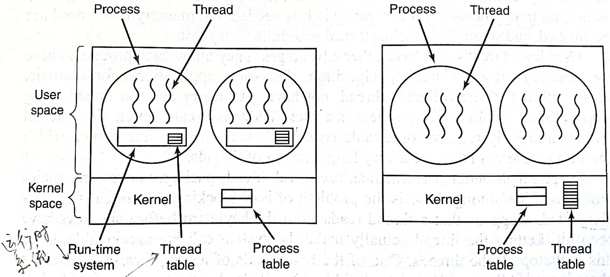
在开始前应当区分用户级线程、内核级线程、用户线程和内核线程。用户级和内核级线程是强调管理者是在用户空间还是内核空间；而用户和内核线程是指线程所运行的地址空间是用户空间还是内核空间。所有的用户级线程都是用户线程；而内核级线程既可以是用户线程也可以是内核线程，取决于运行的地址空间。个人觉得《现代操作系统》在混用内核线程和内核级线程。
本节先讲述用户级线程
用户级线程完全在用户空间实现，内核意识不到用户级线程的实现。内核中维护进程表，来调度每个进程。进程由运行时系统（run-time system）和线程组成。运行时系统负责管理该进程中的所有线程。运行时系统有线程表，存了PC、寄存器、栈指针、状态等。
优势：
- 在不支持线程的操作系统上实现线程
- 切换线程不需要系统调用，速度快
- 定制每个进程中线程的调度方案
- 规模更好，内核级线程在内核需要表格空间和栈空间，在线程数量过大时这可能会是个问题。
劣势：
- 一个线程如果在系统调用中被阻塞了，整个进程都会被阻塞，即便其他线程还可以运行。我们可以要求非阻塞系统调用，但是这会牵一发而动全身。更好的解决办法是用
select系统调用：在read前先用select判断会不会产生阻塞，如果会的话就不read了，而是去运行其他线程。 - 调度有困难。由于时钟中断不控制线程之间的调度，除非运行的线程主动放弃CPU并交还给运行时系统，不然其他线程只有等上下文切换到这个进程、运行时系统重新获得控制后，才有可能执行。
- 多核下，一个进程的多个线程无法并行执行。
2.2.5 在内核中实现线程
内核级线程是直接由操作系统内核支持的线程。内核不仅维护了进程表还维护了线程表，内核通过操纵调度器对线程进行调度。不再有运行时系统。
优势：
- 线程是最小调度单位，而不是进程。解决了阻塞和调度困难。也就是说一个线程阻塞不会影响到同一个进程中的其他线程，时钟中断也可以控制线程之间的调度。
劣势：
- 耗时相对长：使用系统调用来创建、销毁、阻塞线程。一个应对小技巧是：删除线程只是标记一下这个线程不能运行，创建线程可以重新激活被标记不可运行的程序。
悬而未决的问题：
fork多线程进程，到底是fork全部线程呢，还是fork调用者这个线程呢？- signal传递给进程，那哪个线程接受呢？或许所有线程要在进程那里注册一下自己想要收到的信号，但是两个线程注册了同一个信号，那这个信号来了后，到底是给谁的呢？
2.2.6 混合实现
结合使用用户级线程和内核级线程，将多个用户级线程连接到内核级线程，而内核只知道内核级线程。由内核级线程管理用户级线程。
这里补充一些恐龙书上的内容。
轻量级进程（lightweight process，LWP）运行在用户空间，共享进程地址空间和系统资源，并与内核进程一一对应，但可以对应多个用户线程。而《现代操作系统》认为轻量级进程就是线程，两者有出入。
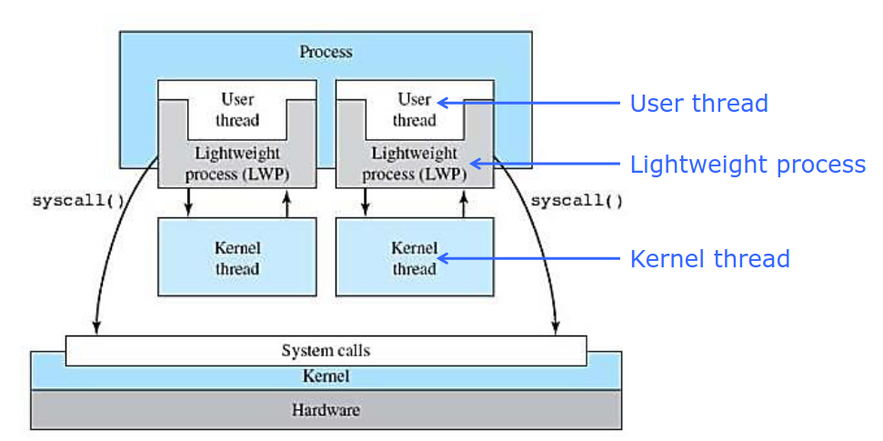
连接用户线程和内核线程由四种常见连接方案：
- 多对一：很像是2.2.4用户级线程的实现，但是注意到严格来说，2.2.4的内核是没有线程概念的。优劣和2.2.4一致。
- 一对一：一个用户线程映射一个内核线程，有点轻量级进程的感觉。并发更好，但是会占据太多内核的空间。
- 多对多
- 两级：联合使用一对一和多对多
个人觉得《现代操作系统》和《操作系统概念》是从两个角度看待线程实现的。。。让人头大。
2.2.7 Scheduler Activations, 2.2.8 Pop-Up Threads, 2.2.9 Making Single-Threaded Code Multithreaded姑且没有整理
2.3 进程间通信
现在考虑进程通信问题——InterProcess Communication (IPC). 主要有三个问题：
- how one process can pass information to another
- make sure two or more processes do not get in each other's way 互斥
- concern proper sequencing when depencies are present 同步
对于线程来说，最后两个问题也是普遍有效的。当然第一个问题对于不同进程中的线程也是有效的。接下来我们讨论的大部分是进程，但是记住问题和解决办法对线程来说也是一样的。
2.3.1 竞态
以打印后台处理服务（print spooler）为例说明。当一个进程想要打印文件时，它会把文件名字写入spooler directory。而打印机守护进程（printer daemon）则周期性地查看有没有文件需要打印，如果有的话就将其打印、并把文件名字从spooler directory中移除。
想象spooler directory由许多个槽（slot）组成，并以0,1,2,...编号，每个槽能够放一个文件名字。再想象有两个所有进程共享的变量：out指向下一个要打印的文件，in指向下一个空的槽。现在out=4，in=7。
竞态（race conditions）可能这样产生：进程A读取in=7并存到局部变量，在将想要打印的文件名字写入7号槽之前，被进程B抢占。进程B也读取in=7，把想要打印的文件名字写入7号槽，并把in更新为8。一段时间后，进程A重新运行，从局部变量内读取7，将内容写入7号槽，覆盖掉了进程B的，并把in更新为8。这样进程B的打印内容就永远丢失了。
多个进程同时读或者同时写共享的数据，就会产生竞态。随着多核带来的并行性提升，竞态变得愈发常见。
2.3.2 临界区
避免竞态的关键在于只允许一个进程读写进程共享的数据。这就是所谓的互斥（mutual exclusion）。而程序中访问共享数据的部分称为临界区（critical region/section）。于是，避免竞态就是避免两个进程同时进入临界区。提出四点要求：
- No two processes may be simultaneously inside their critical regions.
- No assumptions may be made about speeds or the number of CPUs.
- No process running outside its critical region may block any process.
- No process should have to wait forever to enter its critical region.
2.3.3 忙等实现互斥
在考虑忙等之前，先看看其他的一些想法。
1）禁用中断
我们知道只有当中断时，CPU才会调度。那么当一个进程进入临界区的时候，禁用所有中断，再在退出临界区后，恢复中断。这样就实现了互斥。该方法的劣势有：
- 给用户进程禁用中断的能力是不明智的。用户如果故意使他的进程永远在临界区，那么中断不再会发生，系统将会崩溃。不过话说回来，it is convenient for the kernel itself to diable interrupts for a few instructions while it is update variables or especially lists. 也就是内核可以这么做，但是用户不行。
- 禁用中断对于多核处理器失效。当一个CPU的中断被禁用，其他CPU还是可以进入临界区。
2）Lock Variables
有一个初始为0的共享变量。当它为0时，进程设置它为1，然后进入临界区；当它为1时，进程等待它变回0。可见0意味着没有进程在临界区，1意味着有。这个变量称为Lock variable。
但是这个方案不可行，有我们2.3.1讨论的打印机后台程序相同的毛病。当进程A读取lock，发现它是0，然而在设置为1之前被进程B抢占。进程B读取lock发现是0，设置为1后进入临界区。在B出来前，进程A再次运行，将lock设置为1，进入临界区。这样两个进程都在临界区里了。
3）忙等
忙等（busy waiting）指不断检查一个变量的值，直到一些特定的值出现。利用忙等实现的锁称为自旋锁（spin lock）。下面是一个有小问题但是整体可行的方案：
// process 0while (true) { while (turn != 0) ; // enter when turn is 0 critical_region(); turn = 1; noncritical_region();}//process 1while (true) { while (turn != 1) ; // enter when turn is 1 critical_region(); turn = 0; noncritical_region();}这个方案默认了两个进程交替进入临界区。这会违背2.3.2提出要求的第三条：一个不在临界区运行的进程不应该阻塞其他进程。现考虑进程0运行快于进程1。进程1设置完turn为0后进入非临界区，进程0则成功进入临界区、将turn设置为1、进入非临界区，在进程0开始下一次循环时，却会被while循环拒之门外。而此时进程1还在非临界区慢慢运行。这样即便进程1不在临界区，但是进程0却进不去临界区。
此外，忙等自然会产生CPU时间浪费。还有，每一行代码应该都是看作是原子的。
4）Peterson's Solution
1981年，G. L. Peterson提出了一个简单的方案，来解决两进程须交替进入临界区的问题。代码为：
xxxxxxxxxxint turn;int interested[2]; // initially 0// process is 0 or 1void enter_region(int process){ int other = 1 - process; interested[process] = true; turn = process; while (turn == process && interested[other] == true) ;}void leave_region(int process) { interested[process] = false;}进程i(0 or 1)进入临界区前调用enter_region(i)，退出临界区调用leave_region(i)。对于方案3中“一个不在临界区运行的进程不应该阻塞其他进程“的解决是显然的：退出后interested会变成false，while循环不再会将另一个进程拒之门外。
现在考虑两个进程几乎同时调用enter_region，两者都写入了共享变量turn，但是第一个写的会被覆盖。比如进程1覆盖了进程0的，现在turn为1。那么进程0将成功进入临界区，进程1则被自旋锁挡住了，直到进程0退出临界区、不再interested。
5）TSL指令
之前讨论的方案2、3、4皆为软件实现，接下来我们讨论一个需要硬件支持的方案：测试并设置（Test and Set)。指令形式为：
xxxxxxxxxxTSL RX,LOCK将LOCK地址的值存到寄存器RX中，并存储一个非零的数到LOCK地址。并且TSL（Test and Set Lock）是一个原子的指令。用c描述为：
xxxxxxxxxx// run automaticallyint TestAndSet (int *old_ptr, int new) { int old = *old_ptr; *old_ptr = new; // store a new value return old;}不同于方案1禁用中断，TSL原子性是通过锁住内存总线而实现的。除了调用TSL的CPU外，其他CPU都无法访问内存。这种实现在多核处理器下能够正确运行，而方案1禁用中断会在多核处理器下失效。利用TSL指令我们可以这样实现自旋锁：
xenter_region: TSL REGISTER,LOCK # copy lock to register and set lock to 1 CMP REGISTER,0 # was lock zero? JNE enter_region # if it was not zero, lock was set, so loop RET # return to caller, critical region entered
leave_region: MOVE LOCK,0 # store a 0 in lock RET # return to caller当进程进入临界区前调用enter_region，退出临界区调用leave_region。与测试并设置类似的是原子交换指令XCHG。x86就是使用了XCHG指令。利用XCHG指令我们可以这样实现自旋锁：
xxxxxxxxxxenter_region: MOVE REGISTER,1 # put q in the register XCHG REGISTER,LOCK # swap the contents of the register and lock atomatically CMP REGISTER,0 # was lock 0? JNE enter_region # if it was non zero, lock was set, so loop RET # return to caller, critical region entered leave_region: MOVE LOCK,0 # store a 0 in lock RET # return to caller此外，在ostep上有更多的硬件原语：compare-and-exchange，load-linked and store-conditional，fetch-and-add。这里不再展开了。
2.3.4 睡眠和唤醒
2.3.3节讨论的可行方案都是采用了忙等。忙等不仅仅会浪费CPU时间，它还会产生其他问题。考虑一个高优先级的进程H和低优先级的进程L，调度方案是优先级调度，也就是只要当H在ready态时，就让H运行。现在H阻塞，L运行并且进入了临界区；I/O操作结束后H重新回到ready态，L被H抢占；H也想进入临界区，于是开始忙等；然而L不会被调度，因为H在运行。最终H永远陷入了循环，L却不会被调度。这样子的情况有时被称为priority inversion problem.
接下来我们来讨论一对系统调用：sleep和wakeup。sleep()使调用者阻塞，直到另一个进程唤醒它。wakeup(process)则唤醒目标进程。下面我多次说的“睡觉”其实就可以理解为阻塞。
利用sleep和wakeup我们来解决生产者消费者问题（producer-consumer problem, also known as the bounded-buffer problem）。为了简化问题，我们只考虑两个进程共享一个大小固定的buffer。其中一个进程把内容写进buffer，另一个进程读取buffer中的内容。想法很简单，当生产者想要写入满的buffer，就让它睡觉，直到消费者移除了buffer中的一些内容；当消费者想要消费空的buffer，就让它睡觉，直到生产者写入了buffer。于是我们有如下代码：
xxxxxxxxxx//producer-consumer with a fatal race conditionint count = 0;
void producer(void) { int item; while (true){ item = produce_item(); if (count == N) sleep(); insert_item(item); count++; if (count == 1) wakeup(consumer); }}
void consumer(void) { int item; while (true) { // if preempted before sleep() if (count == 0) sleep(); item = remove_item(); count--; if (count == N-1) wakeup(producer); consume_item(item); }}乍一看没什么问题，生产者在空buffer里insert_item后就唤醒消费者，生产者发现buffer满后就睡大觉；消费者也是类似。然而还是会产生竞态。考虑在buffer为空时，消费者运行到if (count == 0) sleep();，在执行sleep()前被抢占，但是已经读取了count来看看它是否为0。此时生产者开始运行，写入buffer，并在if (count == 1) wakeup(consumer);唤醒消费者，但是注意到此时消费者并没有睡觉，于是这个唤醒信号将被丢弃。就这样生产者一直运行直到buffer满了，调用sleep睡大觉。消费者重新运行后，发现它之前读的count是0，于是也调用sleep睡觉觉。就这样，生产者和消费者一起睡觉去了。类似地，buffer满时，生产者在执行sleep()前被抢占，也会产生该问题。这种问题有时称为唤醒/等待竞争（wakeup/waiting race）。
问题的关键是wakeup信号传给一个马上要睡觉但是没有睡觉的进程会丢失。一个快速修复是利用一个wakeup waiting bit（个人认为是进程共享的）。当唤醒信号传到一个醒着的进程，那么设置bit = 1；当一个进程要睡觉，但是此时bit == 1，那么设置bit = 0，并且不睡觉。此外，书上提及"The consumer clears the wakeup waiting bit in every iteration of the loop"可能是为了解决刚开始两进程都未阻塞，但是生产者给了消费者唤醒信号，这个信号确实应该被丢弃。
一位wakeup waiting bit可以解决上述问题，但是我们可以构造一个三个进程的例子，来说明一位是不足够的。可以增加位数，但是问题还是在那里。
2.3.5 信号量
1965年，E. W. Dijkstra提议用一个整数来记录wakeup数。他引入了一个新的变量类型，被称做信号量（semaphore）。不同实现下，信号量的语义略有不同，ostep上认为信号量可以是负的，本书采用的是POSIX的语义，信号量是非负的。
信号量有两个重要的相关的原子操作：down和up。最初Dijkstra提出来的时候是P和V，但是这是源于荷兰语，我们就不采用了。
- down：若信号量大于0，减一后返回。若信号量等于0，则sleep，且认为down没有执行完，当被唤醒时，将信号量减一。
- up：将信号量加一，如果有进程因为这个信号量睡觉了，则随机唤醒其中的一个，让它继续执行down（这样信号量又回到了0，但是睡觉的进程少了一个）。个人认为随机唤醒其中的一个，只是把它加入等待队列，并不是立刻执行，这样信号量会是1，可以其他进程率先获得这个锁，而不是那个刚刚唤醒的进程。
通常down和up是当作系统调用实现的。操作系统在测试、更新信号量以及让进程睡觉时，短暂地禁用所有的中断。由于这些操作很快，只需几步完成，禁用中断不会造成什么问题。在多核情况下，需利用TSL或XCHG指令来保证同时只有一个CPU能检查该信号量。（我觉得可以中断和TSL一同使用，中断保证单核下不调度，TSL实现自旋锁来保证其他CPU此时不能访问该信号量。书上并没有明确写这个意思。只是我的猜想。）
此外，还需要提及的是，吴帆PPT（可能包括恐龙书）把down(&semaphore)替换为wait(semaphore)，把up(&semaphore)替换为signal(semaphore)
利用信号量解决生产者消费者问题
xxxxxxxxxx// The producer-consumer problem using semaphorestypedef int semaphore;semaphore mutex = 1; //controls access to critical regionsemaphore empty = N; //counts empty buffer slotssemaphore full = 0; //counts full buffer slotsvoid producer() { int item; while (true) { item = produce_item(); //the following two down cannot reverse order down(&empty); down(&mutex); insert_item(item); up(&mutex); up(&full) }}void consumer() { int item; while (true) { down(&full); down(&mutex); item = remove_item(); up(&mutex); up(&empty); consume_item(item); }}这里三个信号量体现了信号量的两个用途：同步（synchronization）和互斥（mutal exclusion）。其中empty和full保证了一些特定的事件顺序发生或不发生，这便是同步。而mutex保证了至多一个进程能够进入临界区，这便是互斥。此外，像mutex这样/初始化为1/并且用来保证/两个其以上进程/至多只有一个能够同时进入临界区/的/信号量，被称做二值信号量（binary semaphore）。
在2.1.6节中我们曾讨论过中断发生的一个基本流程。在使用信号量的系统中，可以用信号量来隐藏中断。将初始值为0的信号量和I/O设备一一关联。当有进程使用I/O设备时，该进程does a down on the associated semaphore，于是就阻塞了。当I/O设备工作完成后，发来中断，中断处理程序则对相关联的信号量进行up操作，于是该进程又回到了ready态。
producer函数里两个down不能交换顺序。否则，当buffer满时，生产者会带着锁阻塞，而消费者由于没有锁也会阻塞，最终使得两个进程全部阻塞，造成死锁（dead lock）。
2.3.6 互斥量
当信号量的计数功能不再需要，我们可以用一个简化的版本，称为互斥量（mutex）。顾名思义，互斥量用来实现互斥。它是一个共享的变量，有两个状态：unlocked or locked。因此只需要一位就可以表示了，但是通常我们用整型来表示互斥量。0表示unclocked，其他值表示clocked。我们将在线程的背景下讨论互斥量。
当一个线程想要进入临界区时，调用mutex_lock。如果该互斥量已经locked了，调用线程将会被阻塞，直到拥有锁的线程调用mutex_unlock释放锁。如果多个锁被这个互斥量阻塞了，那么其中一个会被随机选中并获得锁。下面是用户级线程的mutex_lock和mutex_unlock的实现：
xxxxxxxxxxmutex_lock： TSL REGISTER，MUTEX # copy mutex to register and set mutex to 1 CMP REGISTER，0 JZE ok # if it was 0, mutex was unlocked, so return CALL thread_yield # give up CPU voluntarily JMP mutex_lockok: ret
mutex_unclok: MOVE MUTEX,0 RET注意到thread_yield主动放弃CPU，使上述实现没有忙等。此外thread_yield is just a call to the thread scheduler in user space， 所以mutex_lock和mutex_unlock无需陷入内核，全部在用户空间实现，十分快。
之前我们总是默认进程可以有共享的变量，但是又知道进程没有共享地址空间，那这一点是怎么实现的呢？有两个方案：
- 将一些共享的数据结构比如信号量存在内核中，只能通过系统调用访问
- 大部分操作系统（包括UNIX和Windows）提供一些办法让进程之间共享部分部分地址空间。再不济的话，可以用一个共享的文件。
Futexes
注意到之前提到的sleep、wakeup、down、up等指令都是系统调用，而总是陷入内核是相当昂贵的，并且其实很多时候并不会产生竞态。Linux采用了futex（fast user space mutex）来实现互斥同时避免不必要地陷入内核。futex包含两部分：内核服务和用户库。内核服务提供了等待队列允许多个进程等待一个锁。他们不会运行，直到内核显式取消它们的阻塞。大体思路是：在用户态使用原子操作，对持有锁的持有情况进行判断，如果锁可以占用，那么更新锁的状态并直接占用，不需要进入内核态，如果锁已经占用，则进入内核态挂起当前任务。书上也没有很详细，大体知道linux下的互斥锁是基于futex的就好了。
Mutexes in Pthreads
这里粗略介绍Pthread部分所提供的同步线程的函数。这些函数都保证其原子性。
| Thread call | Description |
|---|---|
| Pthread_mutex_init | Create a mutex |
| Pthread_mutex_destroy | Destroy an existing mutex |
| Pthread_mutex_lock | Acquire a lock or block |
| Pthread_mutex_trylock | Acquire a lock or fail |
| Pthread_mutex_unlock | Release a lock |
注意到Pthread_mutex_lock尝试获取锁，如果失败就会阻塞；Pthread_mutex_trylock尝试获取锁，失败了返回不为0的错误值，不阻塞。
此外Pthread还提供条件变量（condition variable）。条件变量使得线程能因一些条件没有满足而阻塞。比如生产者消费者问题中，当我们发现buffer满了，可以利用条件变量来阻塞和之后唤醒线程。
| Thread call | Description |
|---|---|
| Pthread_cond_init | Create a condition variable |
| Pthread_cond_destroy | Destroy a condition variable |
| Pthread_cond_wait | Block waiting for a signal |
| Pthread_cond_signal | Signal another thread and wake it up |
| Pthread_cond_broadcast | Signal multiple threads and wake all of them |
互斥量和条件变量总是一起使用的。此外，信号传给一个没有线程等待的条件变量的话，这个信号会被简单地丢弃。这里再给出两点建议：
- 调用wait和signal时都要持有锁：调用wait时持有锁是语义要求，因为wait的职责是释放锁，并让调用线程睡觉，当线程被唤醒后，该线程会放到就绪队列，当它再次运行时，wait会重新获得锁，再返回调用者；而调用signal持有锁并不是严格需要，但为了生活简单，还是要持有锁。
- 对条件变量使用while而不是if：检查条件变量时，while总是对的，if可能会对。
下面是一个完成的利用线程解决生产者消费者问题的代码：
xxxxxxxxxx//using threads to solve the producer-consumer problem with a single buffer//多值缓冲区可以看ostep30.2 P259
pthread_mutex_t the_mutex;pthread_cond_t condc, condp;int buffer = 0;
void *producer(void *ptr){ int i; for (i = 1; i <= MAX; i++) { pthread_mutex_lock(&the_mutex); //如果buffer非0，wait while(buffer!=0)pthread_cond_wait(&condp,&the_mutex); buffer = i; pthread_cond_signal(&condc);//唤醒消费者 pthread_mutex_unlock(&the_mutex); } pthread_exit(0);}void *consumer(void *ptr){ int i; for (i = 1; i <= MAX; i++) { pthread_mutex_lock(&the_mutex); //如果buffer为0，wait while(buffer==0)pthread_cond_wait(&condc,&the_mutex); buffer = 0; pthread_cond_signal(&condp);//唤醒生产者 pthread_mutex_unlock(&the_mutex); } pthread_exit(0);}int main(){ pthread_t pro, con;//两个线程 pthread_mutex_init(&the_mutex,NULL);//初始化互斥量 pthread_cond_init(&condc,NULL);//初始化条件变量condc pthread_cond_init(&condp,NULL);//初始化条件变量condp pthread_create(&con,NULL,consumer,NULL);//创建con线程 pthread_create(&pro,NULL,producer,NULL);//创建pro线程 pthread_join(pro,NULL);//等待con线程结束 pthread_join(con,NULL);//等待pro线程结束 pthread_cond_destroy(&condc);//摧毁条件变量condc pthread_cond_destroy(&condp);//摧毁条件变量condp pthread_mutex_destroy(&the_mutex);//摧毁互斥量}2.3.7 管程
Using semaphores and mutexes is by no means easy. To make it easier to write correct programs, Brinch Hansen (1973) and Hoare (1974) proposed a higher-level synchronization primitive called a monitor (管程). A monitor is a collection of procedures, variables, and data structures that are grouped together in a special kind of module or package, much like class in cpp.
Monitors have an important property: only one process can be active in a monitor at any instant. If there is a process using the monitor, then the calling process will be suspended until that process has left. Otherwise, it can enter the monitor.
Monitors are a programming-language construct, so the compiler knows they are special. It is up to the compiler to implement mutual exclusion on monitor entries, but a common way is to use a mutex or a binary semaphore. Because the compiler, not the programmer, is arranging for the mutual exclusion, it is much less likely that something will go wrong.
However, mutual exclusion is not enough. We also need condition variables in monitor to block calling procedures when they cannot continue. As is mentioned earlier, wait is used to block a process and release its lock while signal is used to wake up a process and enable it to hold the previous lock again.
After doing a signal on a condition variable to wake up a sleeping partner, we need a rule to decide which one should be in the monitor. There are three proposals.
- Hoare: letting the newly awakened process run, suspending the other one
- Brinch Hanse: the process which does the signal must exit the monitor immediately. In other words, a
signalstatement may appear only as the final statement in a monitor function. - letting the process which do that signal continue to run and allow the waiting process to start running only after the signaler has exited the monitor
For simplicity, we will use Brinch Hanse's proposal. Here is a monitor example written in an imaginary language, Pidgin Cpp, by myself.
xxxxxxxxxxmonitor ProducerConsumer{private: condition full, empty; int count = 0;public: void insert(item) { if(count == N) wait(full); insert_item(item); count++; if(count == 1) signal(empty); //signal is the final statement } item remove() { if(count == 0) wait(empty); item remove = remove_item(); count--; if(count == N-1) signal(full); //signal is the final statement return remove; }}
procedure producer{ while (true) { item itm = produce_item(); ProducerConsumer.insert(item); }}procedure consumer{ while (true) { item = ProducerConsumer.remove(); consume_item(item); }}The code above really looks similar to sleep and wakeup in section 2.3.4, which we saw earlier had fatal race conditions. Well, it's right, but with one crucial difference: sleep and wakeup failed because while one process was trying to go to sleep, the other one was trying to wake it up. With monitors, that cannot happen, which is guaranteed by monitors' automatic mutual exclusion.
Although c does not support monitors, some programming language support monitors. For example, by adding the keyword synchronized to a method declaration, Java guarantees that once any thread has started executing that method, no other thread will be allowed to start executing any synchronized method of that object. But I will not dive into Java too deep.
In conclusion, monitors are a programming-language concept, which makes parallel programming less error prone but gives a new request to programming language (support monitors and semaphores), compilers (arrange for mutual exclusion) and operating systems (support semaphores).
2.3.8 Message Passing，2.3.9 Barriers和2.3.10 Avoiding Locks: Read-Copy-Update没有整理
2.4 调度
虽然下面主要讨论进程之间的调度，但是它们也适用于线程。事实上你会发现这些算法只是个大体思路，究其细节还是挺模糊的。
2.4.1 介绍
一些术语：
- burst：运行时长。CPU burst，I/O burst
- compute-bound/CPU-bound：进程花大量时间在计算上，CPU burst相对较长。
- I/O-bound：进程花大部分时间在等待I/O上
- A nonpreemptive (非抢占式) scheduling algorithm picks a process to run and then just lets it run until it blocks (either on I/O or waiting for another process) or voluntarily releases the CPU.
- A preemptive (抢占式) scheduling algorithm picks a process and lets it run for a maximum of some fixed time. If it is still running at the end of the time interval, it is suspended and the scheduler picks another process to run. Doing preemptive scheduling requires having a clock interrupt occur at the end of the time intercal to give control of the CPU back to the scheduler.
何时调度：
- 创建新进程时
- 进程结束时
- 进程阻塞时
- I/O中断时
目标：
All systems
- Fairness: giving each process a fair share of CPU
- Policy enforcement: seeing that stated policy is carried out
- Balance: keeping all parts of the system busy
Batch systems
- Throughput (吞吐量): maximize jobs per hour
- Turnaround time (周转时间): minimize time between submission and termination
- CPU utilization: keep the CPU busy all the time
Interactive systems
- Response time (响应时间): the time between issuing a command and getting the result。也就是首次开始运行的时刻减去到达的时刻。
- Proportionality: meet users' expectations
Real-time systems
- Meeting deadlines: avoid losing data
- Predictability: avoid quality degradation in multimedia systems (e.g. if the audio process runs too erratically, the sound quality will deteriorate rapidly)
恐龙书上还定义了Waiting time（等待时间）: 进程在就绪队列中等待调度的时间片总和
2.4.2 批处理系统调度方案
批处理系统（batch system）中没有用户着急地等待终端快速响应一个短请求。因此非抢占式的算法或者等待较长时间的抢占式算法通常可以接受。这减少了上下文切换，由此提升了性能。
First-Come, First-Served (FCFS)
维护一个等待队列，CPU每次处理队首任务。当一个阻塞进程变回ready态时，它将放到队列末，如同一个新进程那样。
优势：简单；先到先得很公平
劣势：一些耗时较少的进程排在了耗时较长的进程之后，使得耗时较少的进程等待很长时间，也就是所谓的护航效应 (Convoy effect)。考虑一个每次运行1s的compute-bound进程和多个需要CPU时间极少但是要进行1000次磁盘访问的I/O-bound进程。这些I/O-bound的进程需要1000秒才能结束。如果时一个抢占式的调度器，每10毫秒抢占compute-bound进程，那么这些I/O-bound进程10秒就可以完成了。
Shortest Job First (SJF)
运行耗时最短的作业，直到它阻塞或者结束。若所有作业同时到达的话，SJF能达到最小的平均周转时间，可以认为是最优算法。SJF前提是假设了所有作业的运行时间已知。这对于每天做相同工作的批处理系统其实是可以做到的。
可以通过历史运行时间来估计下次运行时长。利用递推式
虽然具有较好的周转时间，但是SJF在响应时间上表现的不好。饿死（starvation）——进程没有机会获取CPU资源，也可能会产生。
Shortest remaining time next
每次来进程时，看看我短还是当前进程剩余时间短，我短的话就抢占当前进程。同样的，该算法也假设所有作业的运行时间已知。
2.4.3 交互式系统调度方案
交互式系统（interactive system）有猴急的用户。他们渴望立刻看到反应，所以响应时间很重要。交互式系统包括个人电脑、服务器等。
Round-Robin (RR, 轮转)
每个进程都被分配了一个时间间隔，称做调度量子（quantum）或者称做时间片（time-slice）。当进程运行时间超过了调度量子的话，进程将会被抢占而转为ready态。当然如果在调度量子结束前，进程已经阻塞或者结束了，CPU就会运行其他进程了。至于怎么选择其他进程，用FCFS等算法都行。
问题的关键在于如何选取调度量子的时长。如果时长过短会造成过频繁的进程切换从而降低CPU效率；时长过长会造成响应时间过长。一般来说在20～50毫秒为宜。
如果响应时间是我们的唯一指标，那么选取合适的调度量子时长，RR就会是非常好的调度方案。但是如果周转周期是我们的指标，RR是最糟糕的策略之一了。
Priority Scheduling
赋予每个进程优先级，每次运行优先等级最高的进程。为了防止高优先级的进程无限期地运行下去（产生其他进程饿死starvation），调度器可以在每个时钟中断降低正在运行进程的优先级（aging）。如果当前进程优先级低于下一个高优先级的进程的话，进程切换就会发生。我们还可以为每个进程分配调度量子，高优先级的进程用完调度量子后，就会运行次高优先度进程。
此外，We can group process into priority classes and use priority scheduling among the classes but round-robin scheduling within each class.
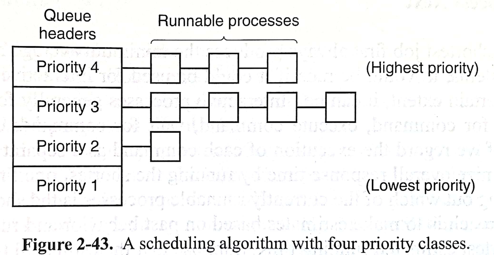
Multilevel Feedback Queue (MLFQ)
很棒的一个调度方法。有以下几点要求：
- 如果A的优先级>B的优先级，运行A
- 如果A的优先级=B的优先级，轮转运行A和B
- 新工作放在最高优先级
- 一旦工作用完了其在某一层的时间配额（无论中间主动放弃了多少次CPU），就降低其优先级
- 经过一段时间，将系统中所有工作重新放入最高优先级队列
以上摘自ostep。恐龙书上则认为，有多个队列、每个队列有自己的调度算法、有情况使得进程降级和升级，就是多级反馈队列了。比如第一层和第二层采用不同调度量子的RR，第三层采用FCFS。本书没有提到该算法，倒是有个多级队列（Multiple Queue），类似的也是每层采用不同的调度量子，跑完一层就去下一层。
Lottery Scheduling
之前的调度方案目标都是优化周转时间和响应时间，而这里我们调度程序的最终目标是：确保每个工作获得一定比例的CPU时间。这种算法称为proportional-share scheduling或者fair-share scheduling。其中最出名的是彩票调度了。
彩票数（ticket）代表了进程占某个资源的份额。一个进程所拥有的彩票数占总彩票数的百分比为20%，那么它有20%的几率可以获得CPU。
彩票调度有一些有意思的机制：不同进程可以有不同彩票币种，允许拥有一组彩票的用户以他们喜欢的某种货币，将彩票分给自己不同的工作，最后再由操作系统统一兑换为正确的全局彩票；彩票转让则允许一个进程临时把自己的彩票交给另一个进程，比如客户端阻塞后就把自己所有彩票转让给服务端，这样服务端有更大几率处理客户端的请求。
2.4.4 实时系统调度方案
并不是重点。个人觉得知道实时系统不一定是满足可调度的（schedulable）就行了。
2.4.5 Policy Versus Mechanism
mechanism是内核所定下来的，但是policy是可以由用户进程所设置的。意思就是说，有时父进程知道子进程的相对重要性，我就可以让父进程设置子进程的优先级，达到更好的调度效果。
2.4.6 线程调度
之前讨论的调度方案也适用于线程。无论是运行时系统调度用户级线程，还是内核调度内核级线程。但是内核级线程的调度会更倾向于同一个进程内线程的切换，而不是从一个进程的线程切换到另一个进程的线程，因为进程的上下文切换耗时长。线程级线程可以客制化调度方案，运行时系统可以知道每个线程具体是干啥的，这对于内核级线程是无法实现的。
2.5 经典IPC问题
这里介绍哲学家就餐问题（dining philosophers problem）和读者写者问题（readers and writers problem）。
2.5.1 哲学家就餐问题
几个哲学家围坐在圆桌旁。每个人面前放了一盆意大利面，面和面之间都放了一个叉子。哲学家有两个状态：思考和进食。由于哲学家思考得太累了，进食需要用两个叉子。于是哲学家会按照任意顺序先后拿起他左边和右边的叉子。吃一会儿后，哲学家放下叉子，继续思考。
如果不加锁的话，哲学家可能同时拿起他左边的叉子，这样所有人都拿不到右边的，造成了死锁。可能想到一个解决方案是：若哲学家发现只能拿起一个叉子时，就放下拿起的叉子，然后等待一个随机的时间，再尝试拿叉子。虽然大体可行，但是有可能算法失效（每次随机时间相同的话，虽然极小概率）。
利用信号量我们可以解决哲学家就餐问题：
xxxxxxxxxx//the number of philosophertypedef int semaphore;int state[N];semaphore mutex=1; //binary semaphoresemaphore s[N]; //to block philosopher
void philosopher(int i) //i:philosopher number, 0~N-1{ while(true){ think(); take_forks(i); eat(); put_forks(i); }}void take_forks(int i){ down(&mutex); state[i]=HUNGRY; test(i); up(&mutex); down(&s[i]);}void put_forks(int i){ down(&mutex); state[i] = THINKING; test(LEFT); //see if left neighbor can now eat test(RIGHT); //see if right neighbor can now eat up(&mutex);}void test(int i){ if (state[i]==HUNGRY && state[LEFT]!=EATING && state[RIGHT]!=EATING){ state[i]=EATING; up(&s[i]); }}2.5.2 读者写者问题
书上利用信号量给出了一个简单的思路：
xxxxxxxxxxtypedef int semaphore;semaphore mutex = 1;semaphore db = 1;int rc = 0;
void reader(){ while(true){ down(&mutex); rc++; //get exclusive access to rc if (rc==1)down(&db); //if there are readers, writers cannot write up(&mutex); read_data(); //not locked, so multiple readers have access down(&mutex); rc--; //get exclusive access to rc if(rc==0)up(&db); up(&mutex); use_data(); //noncritical region }}void writer(){ while(true){ think_up_data(); //noncritical region down(&db); write_data(); up(&db); }}这个方案允许一个写者或者多个读者互斥进入。如果读者源源不断，那么写者可能永远也没有办法写入了。这个问题我们需要做一些修改，让写者有更高的优先度。这里不再展开。（事实上书上叫你看论文去）
三、内存管理
本章讨论的是程序员视角下的主存（main memory）及其管理，至于存储器的组织结构（直接映射、组相连、SRAM、DRAM等）都是计算机组成关心的内容。内存和主存两个叫法个人觉得无需区分。
3.1 无内存抽象
早期计算机的所有程序直接访问物理地址，每个地址对应一个存储8位的cell。通常意义下，这种实现只允许同一时间内存中至多有一个用户程序，否则一个用户程序的读写操作可能会造成另一个用户程序的崩溃（不过接下来会看到一些解决方法）。但是计算机还需要操作系统吧，关于操作系统程序和用户程序在内存中的位置有各种约定：
- 早期大型机和小型机：内存最上部分是用户程序，最下面是RAM中的操作系统程序
- 手持电脑和嵌入式系统：内存最上面是ROM中的操作系统，最下面是用户程序
- 早期个人电脑（譬如MS-DOS系统）：内存最上面是ROM中的BIOS（一些设备驱动等），中间是用户程序，最下面是RAM中的操作系统的其余部分
同样的，用户程序的一些bug可能会导致操作系统崩溃。
想来点并行？不是不可能，用线程就好了，毕竟线程就是共享地址空间的。但是一方面用户原来想运行的是完全无关的多个程序，另一方面让不支持内存抽象的系统支持线程，可谓是天方夜谭。
如何运行多个程序
一个简单可行的想法是交换（swap）：把还没有运行完的整个用户程序从内存扔到磁盘，从磁盘加载另一个用户程序，从而实现了运行多个程序。
下面主要探讨第二个想法，被早期的IBM 360系统采用。CPU内部用寄存器为每个内存块（2KB大）维护了一个4位的保护关键字（由于内存MB量级，所有关键字并不会占据CPU内部过多空间），此外CPU中的PSW（program status word，程序状态字）中也维护了一个4位的关键字。于是每次进程尝试访问保护关键字不同于PSW中的内存块时，就会陷入内核。也就是说，进程只能访问和PSW中关键字一致的内存块，而PSW的关键字只能由操作系统修改。这样实现了多个程序在内存共存的一种保护机制。
然而，不能简单的将程序拷贝到内存某个位置。对于程序中跳转到绝对地址的指令，IBM 360采用了静态重定向（static relocation）——在加载到内存时，把那些需要重定向的地址/加上/代码程序被加载到的地址。但是这样会降低加载速度，也需要额外的信息去判断指令是否包含需重定向的地址。
即便没有内存抽象很古董，但是现在仍在嵌入式系统和智能卡系统中广泛应用，毕竟也没有用户能在吐司机上运行程序吧。
3.2 地址空间
3.2.1 地址空间概念
想让多个程序同时在内存中存在，需要保护和重定向两个要求。为此，人们提出了地址空间（address space）这一内存抽象。地址空间是一组进程可以用来访问内存的地址。每个进程有它自己独立的地址空间，当然也存在一些特殊情况需要进程共享部分地址空间。譬如进程A的地址28就和进程B的地址28是不同的物理地址。下面给出一个一度常见但是不再使用的方法：base and limit registers，其中base寄存器记录程序在内存中开始的地址，limit寄存器记录程序的长度。
首先采用了动态重定向（dynamic relocation）——在执行时完成重定向，而不是加载时。每当进程访问内存时（譬如取指令、读写内存），CPU硬件会自动把基地址加到进程生成的地址上去，然后再传到内存总线。其次用limit寄存器检查这个地址是否超过程序可以访问的范围了。
8088和8086采用了类似的技术，但是它只有base寄存器，没有limit寄存器。
这种动态重定向的方法需要一次加法和一次比较才能生成地址，仍然具有效率问题。
3.2.2 交换技术
当所有程序需要的内存大小超过了实际的物理内存大小（把20G的游戏全部加载到内存？肯定不行啊），有交换（swapping）和虚拟内存（virtual memory）两种解决手段。交换把整个程序全部仍到磁盘中，给内存留出空间；虚拟内存则允许程序部分在内存中就可以运行了。这里讨论交换技术。
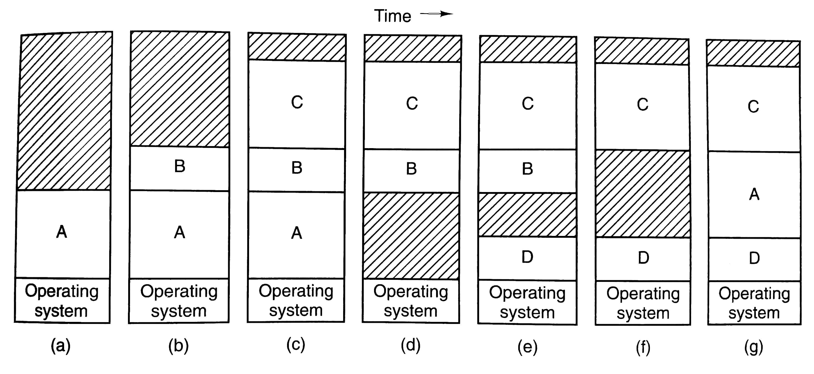
上图展示了一系列swap过程，挺直观的，不多解释了。
交换过程中可能会在内存中产生一些hole，可以做内存压缩（memory compaction）让几个hole合并起来。但是这并不常见，因为这耗时巨大。
另一个需要解决的问题是为每个进程分配多大的内存呢？如果进程大小不变，那么分配刚刚好的内存是一个很好的选择。可是大部分进程大小是动态改变的，比如进程的栈和堆都会改变大小。那就多分配一些内存吧，当然在交换回磁盘时，这些多分配的没有使用的内存就不用交换回去了。如果进程把多分配的内存也用完了，可以将进程移动到一个更大的hole去、交换回磁盘、或者杀死算了。
3.2.3 空闲内存管理
如何知道内存是否空闲呢，可以使用位图（bitmap）或者空闲列表（free list）来记录。下面依次介绍。
Memory Management with Bitmaps
如下图(a)(b)所示。将内存划分成多个allocation unit，每个allocation unit对应位图中的一位。allocation unit太小，就会占据过多内存存储位图；过大则会因进程大小不能很好贴合allocation unit的倍数而浪费内存。此外，遍历整个位图寻找连续k个空闲allocation unit耗时长。
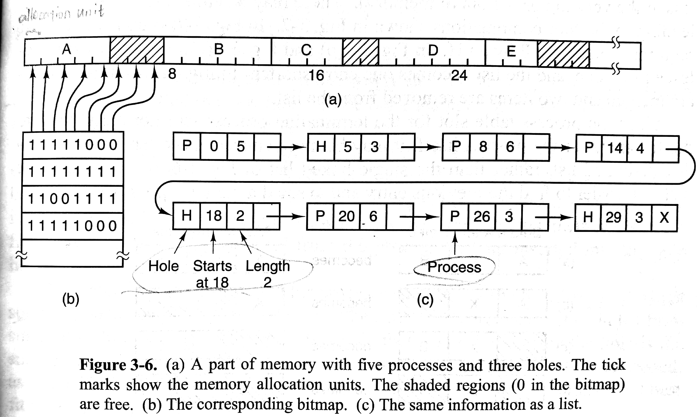
Memory Management with Linked Lists
如上图(a)(c)所示。可以看到这个例子中链表是由地址排序的，这使得更新链表容易：当一个进程结束后，只需看看前面和后面是不是hole，是的话就合并起来（需要双向链表）。关于分配内存有不同的策略：
- first fit：从头遍历链表，找到第一个足够大的hole就返回。快
- next fit：从上次返回的地址开始遍历链表，找到第一个足够大的hole就返回。研究表明性能略差于first fit。
- best fit：遍历整个链表，返回最小且足够大的hole。慢，性能甚至没有提高，因为倾向于让内存充满小而无用的hole。
- worst fit：遍历整个链表，返回最大的hole。也不是个好主意。
可以通过对进程和hole维护不同的链表来加速上述四个策略，这样就可以花更多时间在查找hole上，而不是进程。然而这也造成一定实现难度：在收回内存时，如何将空闲段从进程链表移动到hole链表。我们还可以对hole链表根据大小排列，这样best fit策略就等同于first fit了，但是hole按照大小排列就失去了左右邻居的信息，使合并造成困难。还可以做一个优化：将信息存在hole之中，每个hole的最前面是hole大小，紧接着是指向下一个hole的指针，这样就不用显式的链表了。
- quick fit：用一个多个条目的表格，每个条目指向一个固定范围大小的hole链表。这使得查找目标大小的hole很快，但是也使判断相邻位置是否是hole变得困难。
这部分内容在csapp的第九章第九节有更详细的说明，且配套有malloc lab。
3.3 虚拟内存
尽管base and limit registers提供了地址空间的抽象，但是它们没法解决程序所需内存超过实际物理内存的问题。3.2.2我们讨论了交换技术解决该问题，但是反复从磁盘和内存之间交换数据，将耗时巨大。1960年代有方案将程序分成多个overlay，执行时就把overlay逐一加载到内存中，也就是说overlay是交换的最小单位，而不再是一整个程序。然而将程序分成overlay的操作是人工完成的，并不是一件容易的事情。而虚拟内存将解决这个难题。
虚拟内存（virtual memory）的基本思想是：每个程序拥有自己的地址空间，这个空间被分割成多个块，每一块称作一页（page，页面）。每一页有连续的地址范围。这些页被映射到物理内存，但并不是所有的页都必须在内存中才能运行程序。当程序引用到一部分在物理内存中的地址空间时，由硬件立刻执行必要的映射。当程序引用到一部分不在物理内存中的地址空间时，将触发缺页故障（page fault），CPU将陷入操作系统，并由操作系统负责将缺失的部分装入物理内存并重新执行失败的指令。
3.3.1 分页和页表
由程序产生的这些地址称为虚拟地址（virtual address，VA），它们构成了一个虚拟地址空间（virtual address space）。虚拟地址不是被直接送到内存总线上，而是被送到CPU内部的内存管理单元（Memory Management Unit，MMU），MMU通过页表（page table）把虚拟地址映射为物理地址（physical address，PA）。在物理内存中页对应的单元称为页框/页帧 （page frame），大小通常和页一样。x86-64支持4KB、2MB和1GB大小的页，通常用户程序使用4KB大小的页，而内核程序可以使用更大的页
这里给出一个MMU工作原理的例子：
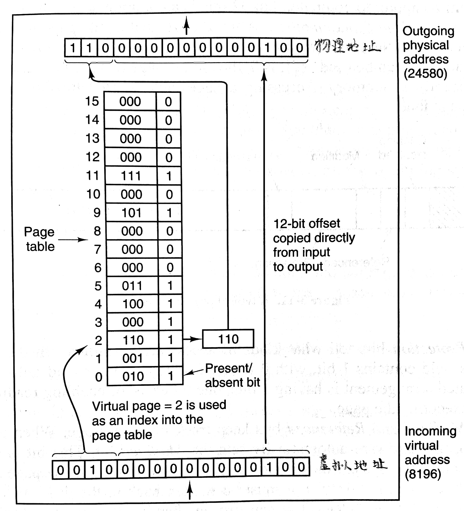
可以看到，虚拟地址被分成虚拟页号（virtual page number，VPN）和偏移（offset）两部分，通过虚拟页号找到页表中的相关条目，用其中的页帧号/物理页号（page frame number/physical page number PPN）替换虚拟地址中的虚拟页号部分，从而生成了物理地址。这个例子中页大小为4KB，虚拟地址范围64KB，物理地址范围32KB。
让我们进一步看看页表中的条目（page table entry，PTE）。一个典型的页表条目包含：
- page frame number：最重要部分，用来替换虚拟地址除offset的其余部分
- present/absent bit：用来判断条目是否有效，如果访问无效的页将会引发缺页故障
- protection bits：可以包含三位，依次表明是否可以读、写和执行
- modified bit：又称为脏位（dirty bit）。来表明该页有没有被修改，如果修改了，在操作系统收回对应页帧时，需要将其写回磁盘；如果没有修改，直接丢弃就好了
- referenced bit：表明该页最近被读写过了，在之后讨论的页面置换算法有用处。
- caching disabled bit：对于内存映射IO的机器，通过设置该位使得每次访问该页将读取IO设备的内容，而不是之前缓存在内存中的内容。
3.3.2 加速分页
之前讨论的方案将整个页表放在内存中，并使用一个特殊的CPU寄存器页表基址寄存器（Page Table Base Register）来存放页表的起始地址，每次访问内存先要访问内存中的页表，这会使得每次访问内存实际上访问了两次，如下面左图2、4所示：（右图产生缺页故障，左图没有）

为了加速访问内存，我们可以CPU内部加入一点硬件存放一些PTE，这个硬件便是TLB（Translation Lookaside Buffer，翻译后备缓冲器）。TLB中存放的PTE个数不大，通常不超过256个。（严格来说不能说TLB存放PTE，应该说存放物理页号、有效位、修改位等等）
下图左是TLB命中，下图右是TLB未命中。当虚拟地址传到MMU后，MMU先通过虚拟页号在TLB中快速寻找对应的PTE，再利用PTE生成物理地址。如果没有找到对应PTE，MMU将会在内存中的页表做常规的查找，并将替换TLB中的一个条目。注意到整个过程由硬件实现。

软件管理TLB
在之前的设计中，TLB的管理和如何处理TLB miss都是完全由MMU硬件处理的，只有缺页故障才会陷入内核，交给操作系统处理。当下一些RISC机器把TLB管理交给软件实现。也就是操作系统负责找对应PTE，替换TLB的条目等。虽然会更多陷入内核，但是由于更简单的MMU硬件、CPU也有更多空间提升其他特征，所以效果还不错。软件实现管理也更灵活，我们可以猜测需要加载进TLB的PTE项，来避免之后的TLB未命中。
上下文切换时TLB怎么办
上下文切换时，对于页表只需改变页表基址寄存器的值就好了，那么TLB怎么办呢？一个简单的方法是把TLB中的所有有效位置为0，相当于清空了TLB，虽然可行，但在切换后会产生大量TLB miss。为了避免这种开销，我们可以在TLB中增加一个地址空间标识符（address space identifier，ASID），类似于进程标识符PID，进程在访问TLB时就知道这个TLB项是不是自己的，从而实现了TLB共享。
3.3.3 针对太大的页表
在一个32位地址空间中，每个页面大小为4KB，则一共需要
多级页表
下面是一个两级页表的例子。通过32位地址的前十位PT1用来检索第一级页表，中间十位PT2用来检索第二级页表，在二级页表中找到对应的物理页号替换虚拟地址的PT1和PT2部分，从而生成了最终的物理地址。32位的虚拟地址对应着4GB的虚拟地址空间，在这个设计中如果物理页号是20位的，那么最后生成的物理地址也是32位的，对应了4GB的物理地址空间。此外如果PTE的大小是32位，那么一个有1024个PTE的页表的大小是4KB，也正好是一个页的大小。所有这些页表组成了页目录（page directory）。
之所以可以节约空间，是由于我们不需要将所有的页表都存在内存中，譬如该例子只用了四个页表。此外内存中只需保存一级页表和较常使用的二级页表，进一步减小了内存的压力。
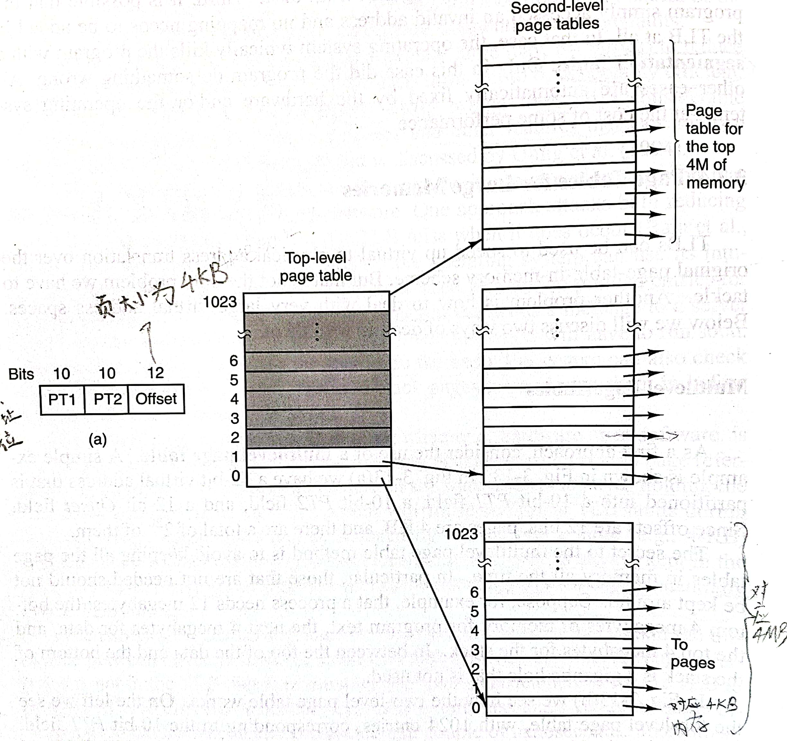
在英特尔64位处理器的实现中，虚拟地址其实只有48位，采用了4级页表，最后生成的物理地址有52位。也就是说虚拟地址空间是248B，物理地址空间是252B=256TB。细节如下图所示，具体缓存设计并不是操作系统课程关心的，需移步计算机组成。

反向页表（inverted page table）
曾经在PowerPC等处理器上采用过。不再是每个页一个条目，而是每个页帧一个条目。譬如在64位的机器上，一个4GB的RAM，采用4KB大的页，那么反向页表需要220个条目。而如果采用36位VPN的话，普通的一级页表要236个条目。虽然反向页表能节省空间，但是导致了虚拟地址到物理地址不易转换。可以用哈希表来解决这个问题，这里不再过多展开。
3.4 页面置换算法
当发生缺页故障时，操作系统需要从内存中移除一个页，并把目标页从磁盘拷贝进来。移除哪个页就是页面置换算法所关心的。
3.4.1 最优页面置换算法
最优页面置换算法（the optimal page replacement algorithm）就是移除未来最晚会使用的页。虽然不具备可行性，但是可以用来评估其他算法在具体依次运行的表现。
3.4.2 最近未使用页面置换算法
NRU（not recently used）算法利用PTE中的R（referenced bit）和M（modified bit）位将页面分成四类：
- not referenced, not modified
- not referenced, modified
- referenced, not modified
- referenced, modified
最先移除第0类中的页面，最后移除第3类的。R位在页面被读写的时候设置为1，周期性（譬如在每个时钟中断时）所有页面的R位被清除置为0.
3.4.3 先进先出页面置换算法
FIFO算法可以通过维护一个队列实现，缺页故障时移除队首页面，在队尾加入新的页面。存在大问题：最老的页面仍然可能是有用的。
3.4.4 第二次机会页面置换算法
second chance算法是对FIFO的一个改进。同样是维护一个队列，但在移除队首页面时，如果其R位为1，则将其放回队尾且将R位设置为0，检查后一个页面；如果R位为0，那么就移除。如果所有页面的R位都是1，那么second chance将等同于FIFO。此外，书上没有写明周期性清除所有R位，但是透露了这种意思。
3.4.5 时钟页面置换算法
clock算法是对second chance的一个改进，不再使用队列，而是使用一个类似循环链表的数据结构。这样就不用做队首删除队尾插入的操作了，直接在需要被移除页面的位置做替换就好了。具体细节如下图：
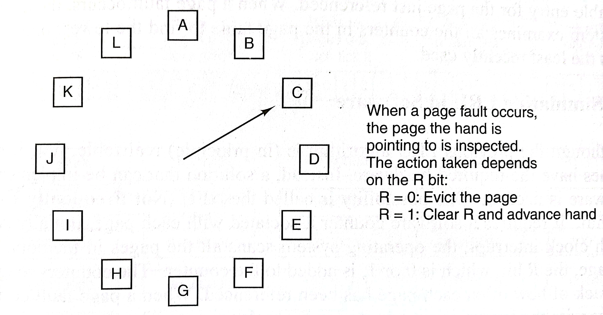
3.4.6 最近最少使用页面置换算法
LRU（Least Recently Used）算法移除历史上最久没有使用的页面。但是并不容易实现，我们需要维护一个链表，最前面是最近使用过的页面。注意到不同于FIFO只需要在缺页故障时更新队列，LRU要求每次页面访问都要更新链表。从链表中找到这个页面，再将其从链表某个位置删除后放到链表最前面，会耗时巨大。
或者我们维护一个时间戳，每次内存访问，就给对应的PTE更新时间戳。到时候移除最古老的时间戳就行了。
3.4.7 用软件模拟LRU
书上意思3.4.6节的实现是通过硬件的，下面这个aging算法是通过软件实现LRU的。每个页面维护一个8位的二进制数。在每个时钟中断时，将八位二进制数右移一位，将R位放到最高位；然后将所有R位清零，开始下一个周期。如果在（e）时缺页故障发生，由于page3的数字最小，所以page3将被替换。（其实aging前还提及了NFU，not frequently used算法，就是在时钟中断时每个页面加上自己的R位，然后清零R位）
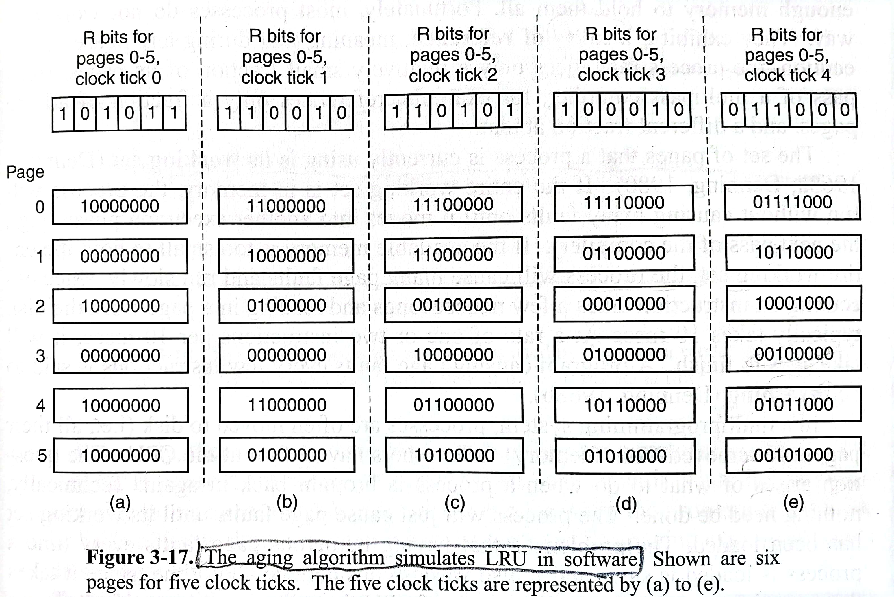
3.4.8 工作集页面置换算法
进程的工作集（working set）
每个进程用的CPU时间称为current virtual time，在页表里记录上次被访问的时间，每个时钟中断清除所有的R位。当缺页故障发生后，扫描整个页表直到发现可以移除的PTE，按照图中所示做相关操作。图中age=current virtual time - time of last use，
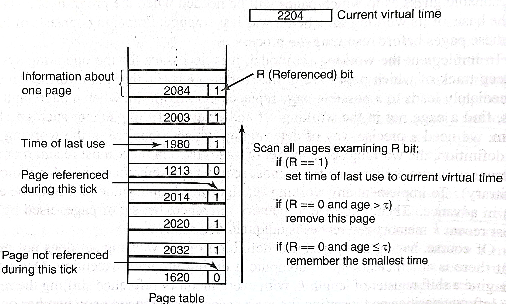
3.4.9 工作集时钟页面置换算法
3.4.8的算法太笨重了，WSClock更加简单且表现不俗。PTE组成一个循环链表。若指针指向的PTE的R位为1，则更新为0，指针前移，继续；若指向的R位为0，M位为0，且年龄超过了预设的
（所以这个算法并不是在移除的时候写回磁盘欸）
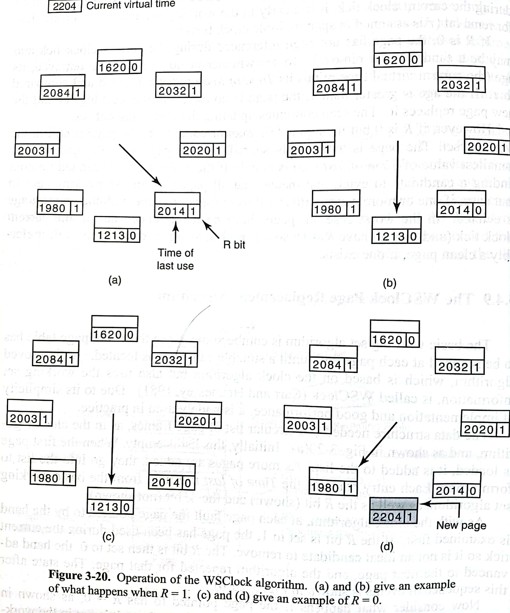
3.4.10 小结
几个算法总结如下：
| Algorithm | Comment |
|---|---|
| optimal | not implementable, but useful as a benchmark |
| NRU | very crude approximation of LRU |
| FIFO | might throw out important pages |
| second chance | big improvement over FIFO |
| clock | realistic |
| LRU | excellent, but difficult to implement exactly |
| NFU | fairly crude approximation to LRU |
| aging | efficient algorithm that approximates LRU well |
| working set | somewhat expensive to implement |
| WSClock | good efficient algorithm |
建议：使用aging或者WSClock
3.5 分页系统中的设计问题
3.5.1 页面分配策略
驻留集（resident set）是指操作系统给某进程分配的页面的集合。
工作集（working set）是指一段时间内，进程实际访问的页面集合。
页面分配、置换策略
- 固定分配VS可变分配：区别在与进程运行期间驻留集大小是否可变
- 局部置换VS全局置换：区别在与发生缺页故障时是否只能从进程自己的页面中选一个换出
- 固定分配局部替换：进程运行前就分配一定数量的物理块，缺页时只能换出自己的某一页。当进程大小改变时，会造成浪费和抖动。
- 可变分配全局替换：只要某进程发生缺页，都将获得新的物理块。如果没有空闲物理块，就从所有进程的页面中进行页面置换算法。
- 可变分配局部替换：每个进程计算PFF（page fault frequency），即单位时间缺页数。当PFF大于阈值，多分配一点物理块；当PFF小于阈值，回收一点物理块。
何时调入页面
- 预调页策略（prepaging）：进程运行前
- 请求调页策略（demand paging）：进程运行时，发现缺页再调页
抖动（thrashing）是指页面频繁换入换出的现象。
3.5.2 负载控制
当抖动难以避免（譬如所有进程的PFF都大于阈值了），解决方法只有将部分进程交换进磁盘了。可见分页下依旧需要交换机制。
3.5.3 页面大小
小页面优势：避免内部碎片（internal fragmentation），节约内存。
小页面劣势：过大的页表，TLB不够用，更多缺页故障
通常用户程序使用4KB大小的页，内核程序可能使用更大的页。
3.5.4 分离的指令空间和数据空间
可以将指令空间和数据空间分开，它们有独立的页表。好处在于，在翻倍地址空间的同时，并没有给操作系统引入更多的复杂性。事实上，现在的L1缓存就是把指令和数据分离的。
3.5.5 共享页面
共享页面就是让两个进程的页表指向同一个页帧，显然这可以节约内存。一般来说，那些只读的页面（譬如程序文本）可以共享，但是数据页面难以共享。当进程A和进程B共享一个页面时，进程A结束时，操作系统知道进程B还在使用这些页面是有必要的，这样这些页面才不会被随意移除。
共享数据很典型的就是fork指令。采用写时复制（copy-on-write）技术。很多时候fork完就直接execve了，完全没有必要在fork时就把内存空间复制到另一块去。fork后，父子进程分别拥有它们自己的页表，但都指向同一个页面集合，这些页面标记为只读。只有虚拟地址被写入时，物理地址上的数据才被复制。
3.5.6 共享库
共享库（shared library）也称为动态链接库（dynamic link library，DLL），也就是在加载或者执行的时候才进行链接，而不是编译的时候。CSAPP的第七章有相当详细的讨论（不过很难读）。这里强调一点，无论是静态链接还是动态链接，都只把程序用到的库函数链接进去，并不是整个库都链接进去。
3.5.7 内存映射文件
内存映射文件（memory-mapped file）的思想是：进程可以通过发起一个系统调用，将一个文件映射到其虚拟地址空间的一部分。如果两个或两个以上的进程同时映射了同一个文件，它们就可以通过共享内存来通信。很显然，如果内存映射文件可用，共享库就可以使用这个机制。
3.5.8 清除策略
为保证有足够的空闲页框，很多分页系统有一个称为分页守护进程（paging daemon）的后台进程，它在大多数时候睡眠，但定期被唤醒以检查内存的状态。如果空闲页框过少，分页守护进程通过预定的页面置换算法选择页面换出内存。如果这些页面装入内存后被修改过，则将它们写回磁盘。
3.5.9 虚拟内存接口
提供虚拟内存接口，给程序员做内存映射的权利，从而加强程序的行为。这里不多展开。
3.6 有关实现的问题
我只选了其中三个看得懂的整理
3.6.1 何时做分页工作
操作系统在进程创建、进程执行、缺页故障和进程结束四种情况将做分页相关的工作。
- 进程创建：需要决定给程序分配多少页面，并创建页表。有些系统磁盘的交换分区需要留出一些地方初始化为程序的文本和数据，有些系统直接可以从磁盘上的可执行文件page the program text，就不需要交换分区的初始化了。最后，页表和交换分区的信息要存入进程表。
- 进程执行：MMU需重置，TLB需清空，页表基址寄存器需指向页表，可能还会加载一些或者全部的页面到内存里
- 缺页故障：从寄存器得到造成缺页故障的虚拟地址，计算所需的页面并在磁盘上找到它。找一个合适的页帧放置它。重新执行这条指令。
- 进程结束：回收页表、页面、页面占据的磁盘空间。
3.6.2 缺页故障处理
- 硬件陷入内核，保存PC于栈。一些当前指令的状态信息保存在特殊的CPU寄存器
- 汇编程序保存通用寄存器和其同易失信息，然后调用操作系统
- 操作系统发现缺页故障，寻找所需的页面的虚拟地址。通常相关信息存在一个硬件寄存器中。
- 操作系统检查地址有效位和保护位，出现问题就给进程发送信号或者直接杀死。找页帧来存放这个页面
- 如果页帧是脏的，需要写回磁盘，写回过程中故障进程被挂起
- 当页帧干净后，从磁盘中寻找并将所需页写入内存。此时故障进程被挂起。
- 写完后，硬件中断发过来，页表更新
- 把PC等设置为引发缺页故障的指令
- 故障进程被调度，操作系统交还给汇编程序
- 汇编程序恢复之前保存的寄存器和其他信息，回到用户空间，继续那条引发缺页故障的指令。好似什么也没有发生过。
3.6.3 交换分区
交换出去的页面放在磁盘的交换分区，没有正常的文件系统。当进程创建时，一个简单的做法是在交换分区划出和进程一样大的区域并初始化为进程的内容，进程表记录该交换分区的起始位置（下图左）。另一个极端做法是进程创建时不预先分配交换分区，只有当页面交换出去了再分配，节约磁盘的同时也要求使用一个额外的表格记录映射（下图右）。
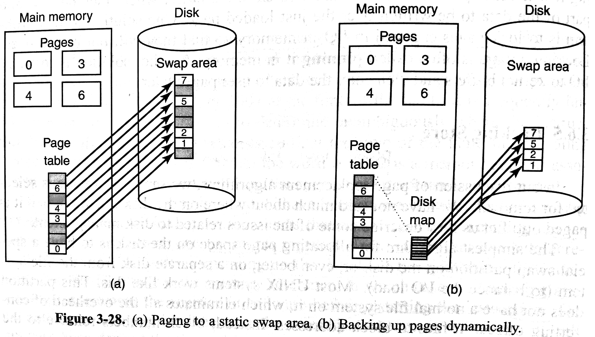
事实上，个人电脑不用交换空间都行，因为内存已经足够大了。用free指令可以查看交换空间信息，我此时的输出如下：（根本没有用交换空间）
xxxxxxxxxx❯ free 总计 已用 空闲 共享 缓冲/缓存 可用内存： 16310992 2305868 9573440 551416 4431684 13119056交换： 2097148 0 20971483.7 分段
就随便谈谈自己的理解了
之前我们讨论程序的地址空间都只有一段，所有的内容（数据、文本、符号表等等）都是在同一个地址空间下的。那如果地址空间不够大，就可能发生向下生长的栈和向上生长的堆撞在一起（当然不大可能，我乱举的例子）。分段（segmentation）就是将这些数据段、代码段等等分开来，每个段有独立的地址空间，可以独立伸缩也不影响别人。3.2.1节提及的limit and base register其实就是分段了。每个段有自己的一组寄存器就可以了。分段还有其他好处，譬如简化链接、保护、共享等等。单纯的分段会在物理内存中产生外部碎片（external fragmentation），即段与段之间的物理内存由于放不进其他段而需要被浪费。为此可以采用分页和分段相结合的手段，书上给出了MULTICS和x86的两种实现。
但事实上分段已经在被淘汰了，即便是一个优秀的想法。当下无论是UNIX还是Windows操作系统其实都是把base设置为0，limit设置为最大，在支持分段的CPU上使用一个段。Intel的x86-64处理器也不再支持分段了。主要原因是操作系统的设计者们不愿意改变自己的内存模型，提出一个x86 specific的系统。
四、文件系统
文件（file）是一种抽象，提供了在磁盘上存储和访问信息的方法。通过文件，用户不用知道信息是怎么存储在磁盘上，也不用知道磁盘怎么工作。操作系统中管理文件的部分称为文件系统（file system），它负责管理文件的结构、命名、访问、使用、实现、保护等等。在讨论文件系统时，可以简单地将磁盘认为由连续的一个一个块（block）组成，并允许操作系统读写某个块。
本章先从用户视角出发，然后逐步深入到内部实现，最后讨论几种文件系统的例子。
4.1 文件
4.1节讨论用户视角对文件的理解。
4.1.1 文件命名
- 是否区分大小写：UNIX区分，MS-DOS不区分
- 文件扩展名（file extension）：譬如
test.c，.c就是文件扩展名。在UNIX系统下，文件扩展名只是个惯例，并不被操作系统要求。不过文件扩展名不仅可以提示用户文件类型，而且譬如c语言编译器要求文件以.c结尾，所以文件扩展名很有用。相反，Windows系统意识到这些文件扩展名，用户也可以register extensions with the operating system and specify for each one which program "owns" that extension. (e.g. Microsoft Word for.docx)
4.1.2 文件结构
给出了三种普通文件（见4.1.3）的结构
- 字节序列：把文件看作字节序列。灵活。UNIX和windows都采用了这种方式。
- 记录序列：把文件看作是定长的记录（record）序列。这种结构的核心是：读操作返回一个记录；写操作重写或追加一个记录。每个记录有其内部结构。古老的大型机采用的方式。
- 树：将记录组成树结构，每个记录长度不用相等。每个记录有键值，按键排序，对键查找，OS决定记录放在哪。B树。用于商业数据处理的大型机。
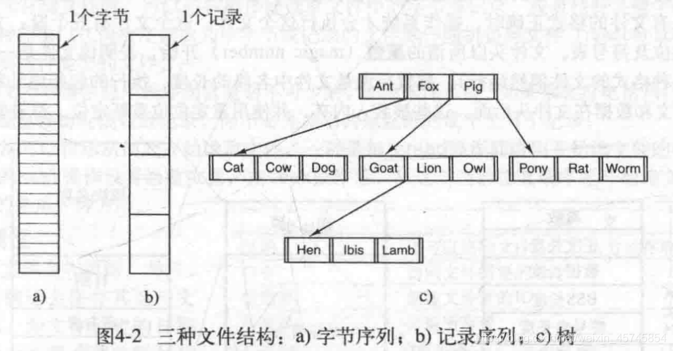
4.1.3 文件类型
普通文件（regular file）：包含用户信息
- ASCII文件：文本文件
- 二进制文件：可执行文件（文件头的魔数magic number用来表明文件是一个可执行文件）、存档文件（archive，编译但未链接的库过程模块组成）。具体见后图。
目录（directory）：用来维护文件系统结构的系统文件
字符特殊文件（character special file）：I/O相关
块特殊文件（block special file）：to model disks
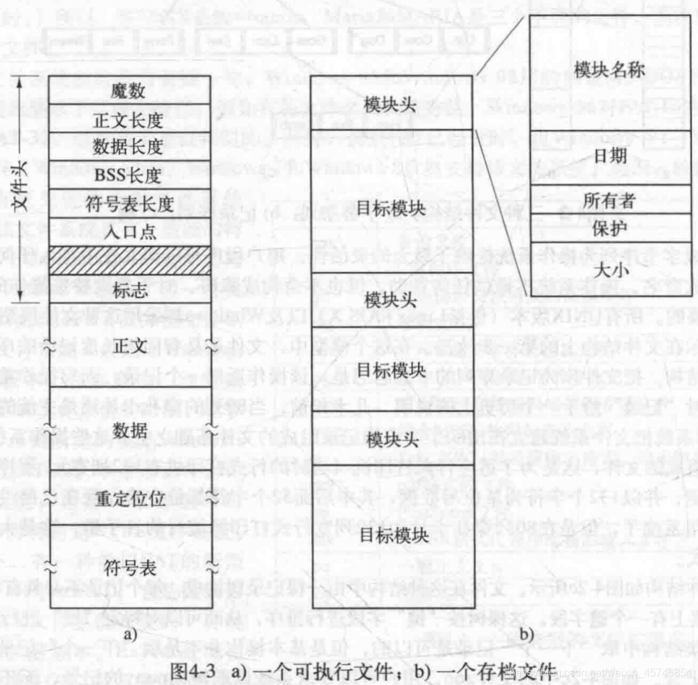
4.1.4 文件访问
顺序访问（sequential access）：文件必须从头到尾按顺序访问全部内容，不可跳过。
随机访问（random access）：被广泛使用。
指示从何处开始读文件：
- read操作给出位置。
- 利用seek操作设置当前位置。被UNIX和windows采用。
4.1.5 文件属性
除了文件名和数据外，创建时间、文件大小等其他信息称做文件属性（attribute）或者元数据（metadata）。下面是一些例子：
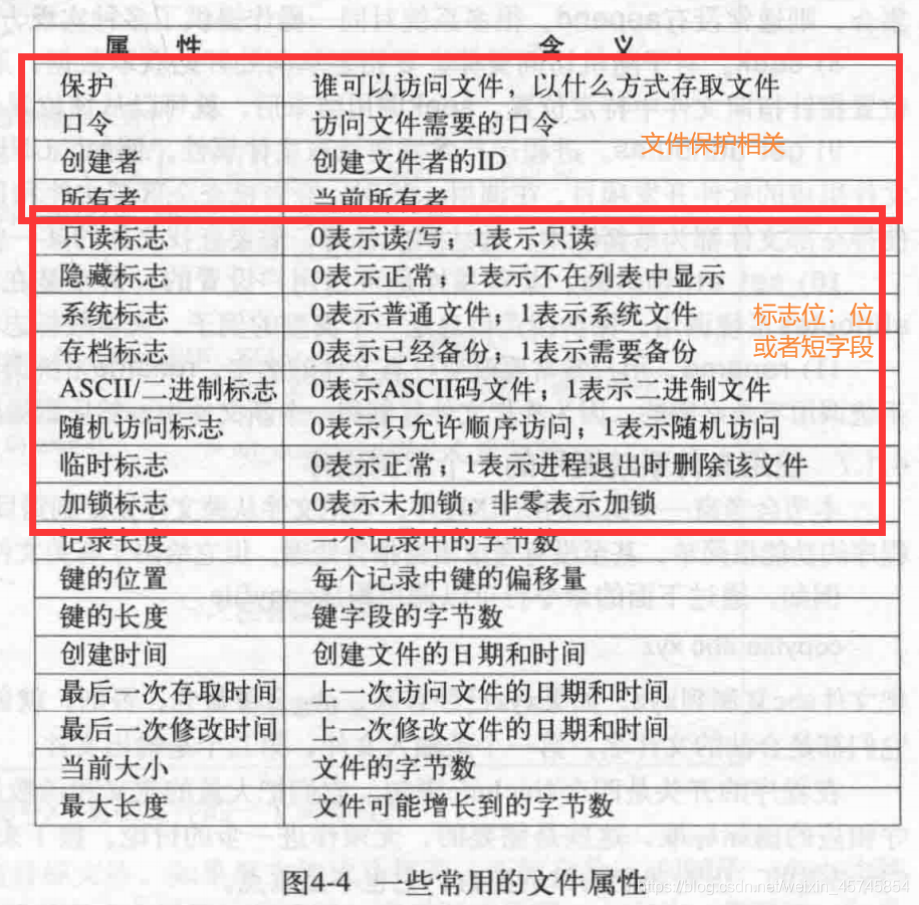
4.1.6 文件操作
create, delete, open, close, read, write, append, seek, get attributes, set attributes, rename
无需更多解释。
4.1.7 文件系统调用程序的例子
xxxxxxxxxx/** * copyfile A B: copy the file A to B */
/*使用一个4096字节大小的缓冲区*//*输出文件的保护位*/
int main(int argc, char *argv[]){ int in_fd, out_fd, rd_count, wt_count; char buffer[BUF_SIZE]; /*argv[0]="copyfile",argv[1]="A",argv[2]="B" */ if (argc != 3) exit(1); /*打开输入文件并创建输出文件*/ in_fd = open(argv[1], O_ RDONLY); /* 打开源文件*/ if(in_fd < 0) exit(2);/*如果该文件不能打开，退出*/ out_fd = creat(argv[2], OUTPUT_MODE); /* 创建目标文件*/ if (out_fd < 0) exit(3); /*如果该文件不能被创建，退出*/ /*copy loop*/ while (TRUE){ rd count= read(in_fd, buffer, BUF_SIZE);/* 读一块数据*/ if (rd_count <= 0) break; /*如果文件结束或读时出错，退出循环*/ wt_count = write(out_fd, buffer, rd_count); /*写数据*/ if (wt_count <= 0) exit(4); /*wt_count <=0是一个错误*/ } /*关闭文件*/ close(in_fd); close(out_fd); if(rd_count==0) /*没有读取错误*/ exit(0); else /*有读取错误发生*/ exit(5);}应该看得懂吧。注意到in_fd和out_fd称为文件描述符（file descriptor）。当文件成功打开时，系统给文件分配的一个整数，后续使用这个整数，程序知道是哪个文件。
4.2 目录
目录（directory）又称文件夹（folder），自身也是文件。4.2节讨论用户视角对目录的理解。
4.2.1 一级目录系统
一级目录系统（single-level directory system）只有一个目录，其包含所有文件。这个目录有时称做根目录（root directory），不过既然只有一个目录，它的名字并不那么重要了。应用于最早的计算机，以及当下一些嵌入式设备。

4.2.2 层次目录系统
层次目录系统（hierarchical directory system）可以有多个目录，组成层次结构。现在被广泛采用。

4.2.3 路径名
绝对路径（absolute path）和相对路径（relative path）
目录中有特殊的条目.指向当前目录，..指向父目录
4.2.4 目录操作
create, delete (only empty file can be deleted), opendir, closedir, readdir (return the next entry in an open directory in a standard format), rename, link (hard link, symbolic link), unlink
关于链接：（将4.3.4节的实现细节合并整理了，虽然这里还没有引入inode，可以看到4.3.4再回来看这节内容）
- 硬链接（hard link）：删除任何其中一个文件，不会影响到另一个。使用
ln file1 file2将file2硬链接到file1上，它们具有相同的inode编号（inode是一种结构体，存放了文件的属性和磁盘块地址，inode存放在磁盘上。inode可以通过ls -i查看，或者通通给过stat filename查看）。硬链接不能链接目录，这是因为目录的硬链接可能会打破文件系统目录的有向无环图结构，造成了你的父目录是你的子目录的怪事，导致一些遍历文件系统的命令出错。 - 符号链接（symbolic link）：又称为软链接（soft link），删除原始文件，会造成链接失效。相当于Windows下的快捷方式。使用指令
ln -s file1 file2将file2符号链接到file1上。它们不具有相同的inode编号。软链接可以链接目录，这是因为系统知道软链接的文件类型不同于常规文件。下面是一个硬链接和软链接的示例：（最前面是inode号）
xxxxxxxxxx❯ ls -al -i总用量 165637007 drwxrwxr-x 2 Gu Wei Gu Wei 4096 4月 30 10:21 .3276857 drwxr-xr-x 10 Gu Wei Gu Wei 4096 4月 30 10:21 ..5637015 -rw-rw-r-- 2 Gu Wei Gu Wei 33 4月 30 10:04 bb5637015 -rw-rw-r-- 2 Gu Wei Gu Wei 33 4月 30 10:04 hl5637013 lrwxrwxrwx 1 Gu Wei Gu Wei 2 4月 30 10:04 sl -> bb
关于上述结果需要强调一点。符号链接的文件实际存放的是路径名而不是inode号（倘若是inode号岂不是又和硬链接一样了），上例中sl文件大小为2字节，是因为bb文件名是两个字节；若将sl文件换一个目录下存放，sl就打不开了，这是因为软链接时bb文件采用了相对路径（这也是为什么软链接建议采用绝对路径）；不过即便bb文件用了绝对路径，如果将bb文件换了目录存放，那么sl又打不开了。
于是我们可以理解为什么符号链接会比硬链接花更多时间上开销。我们需要额外利用符号链接文件的inode号找到目标路径，然后逐步一层一层寻找，最终找到目标文件的inode号。在opstep的草率整理中，我曾经写到：
调用open("/foo/bar", O_RDONLY)，大体思路为：已知根目录“/"的inode号，利用该inode号找到inode块，在该inode块中查找指向数据块的指针并以此找到数据块，数据块中包含根目录的内容，在目录中找到foo条目以及它的inode号，利用foo的inode号找到inode块，inode块中的指针找到目录数据块，在数据块找到bar的inode号，最后把bar的inode号读入内存并返回一个文件描述符。
关于unlink：
unlink使得一个目录条目被移除。当文件系统取消链接文件时，它检查inode号中的引用计数。该引用计数允许文件系统跟踪有多少不同的文件名已链接到这个inode，调用unlink()时，会删除文件名与给定inode号之间的“链接”，并减少引用计数。只有当引用计数达到零时，文件系统才会释放inode和相关数据块，从而真正删除该文件。UNIX下删除文件的操作实际上是通过unlink来实现的。
下图中创建了B文件到C文件的硬链接，可见创建硬链接后，inode的引用计数会增加，当C文件被删除后，引用计数会减小，B仍然可以访问该文件，即便所有者还是C。
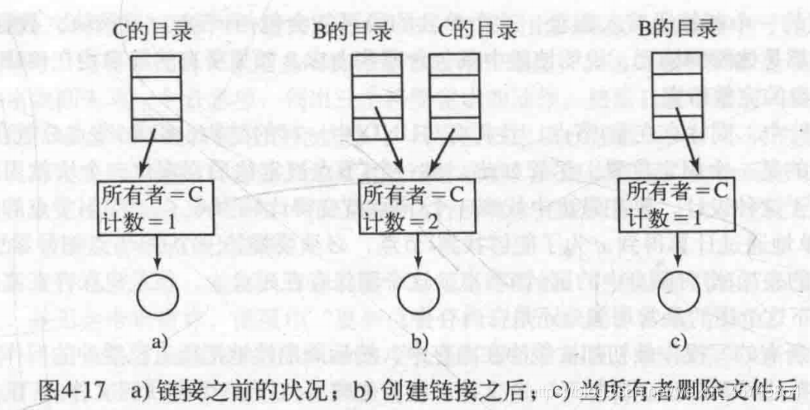
4.3 文件系统的实现
本节从实现者的角度探讨文件系统。注意到磁盘被我们看成多个连续的块组成。
4.3.1 文件系统布局
大部分磁盘都有一个或多个分区（partition）。每个分区有自己的文件系统。
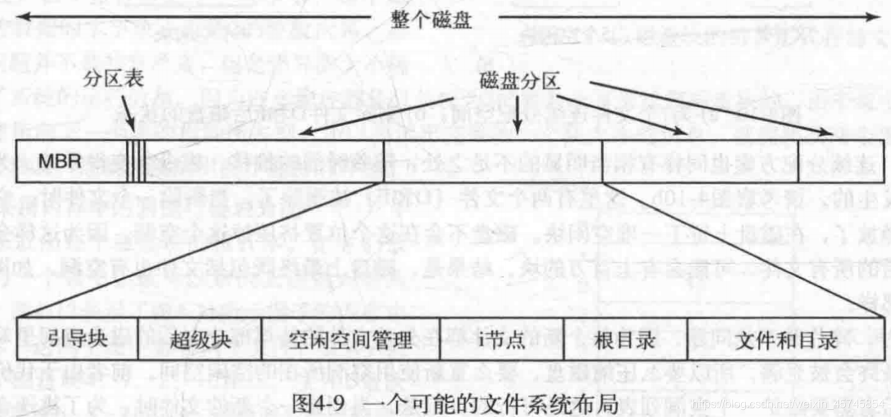
0号扇区被称作主引导记录（master boot record，MBR），用来开机。MBR末尾是分区表（partition table），用来记录每个分区的起始和结束地址。其中一个分区被标记为活动分区。当开机时，BIOS读入并执行MBR，MBR会确定活动分区，读入活动分区的第一个块——引导块（boot block）。引导块中的程序将会加载该分区中的操作系统。
引导块后面是超级块（superblock），它包含了文件系统的所有关键信息（用来表明文件系统类型的魔数，文件系统中的块数，管理信息等），并在刚开机或文件系统第一次接触时读入内存。
之后依次为空闲空间管理（free space management）——利用位图或者链表记录空闲块；inode——每个文件一个inode号，一种用来记录所有文件信息的数据结构；根目录、文件和目录。
4.3.2 文件的实现
主要探讨如何记录文件存在哪些磁盘块里。后文中磁盘块也称为物理块，文件也看作是由连续的文件块组成。
连续分配
将每个文件作为一连串的数据块存储在磁盘上。只需要一个地址和长度，就可以知道文件存在哪里。
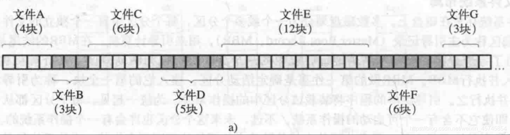
优点：
- 实现简单，记录每个文件用到的磁盘块只需要两个数字：第一块的磁盘地址和文件的块数
- 读操作性能好：单个操作中就可整个读出。只需要一次寻块，之后没有寻道和旋转延迟。
缺点：
- 删除文件后，产生外部碎片。如果想放入hole的话，需要预先知道文件的最终大小。
- 如果文件大小可变，会很糟糕
应用场景：CD-ROM。所有文件都预先知道大小，并且不会改变。
链表分配
文件并不占据连续的物理块，每个物理块的第一个字作为指向下一个物理块的指针。块的其他部分存文件块数据。每个文件只需要记录一个物理块地址就可以访问了。
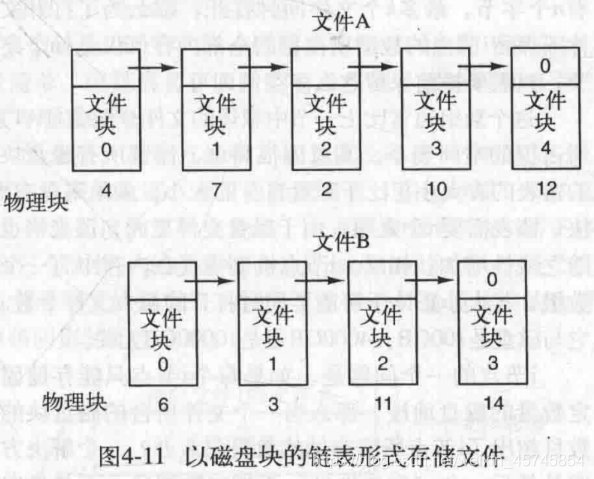
优点：
- 无外部碎片
- 文件大小可任意改变
缺点：
- 随机访问缓慢（链表查找时间复杂度O(n)）
- 由于指针占据物理块的部分字节，使得文件块的大小很古怪
链表分配+FAT
之前提及物理块最前面的指针使得文件块的大小很古怪，那么将这些指针单独拿出来存，就可以解决这个问题了。我们在内存中维护一个文件分配表（file allocation table, FAT），记录下一个文件块用的物理块，-1表明该物理块是最后一个文件块。每一个文件只需要记录第一个物理块号，再通过查表就可以知道所有所用的物理块了。
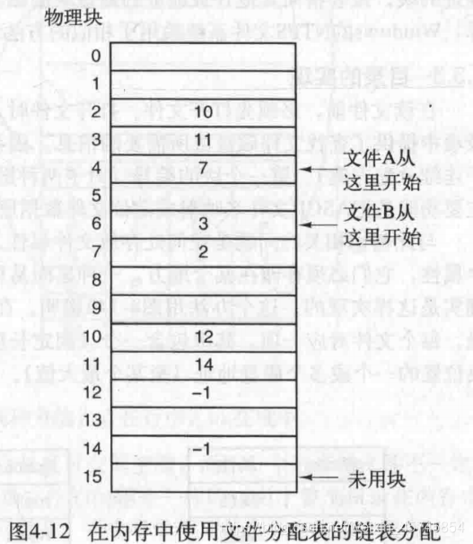
额外优点：
- 解决文件块大小古怪
- 随机访问时间变快。因为整个FAT都在内存中。
缺点：
- 每个物理块都要对应一个FAT条目。FAT会相当的大，占据过多内存。
应用场景：MS-DOS采用的FAT-12，FAT-16，FAT-32文件系统。当年磁盘比较小哈。
inode
inode是一种数据结构，存放了文件属性和固定数量的磁盘块地址。为了大文件，可以记录包含附加磁盘地址的磁盘块的地址。每个文件只需要知道其inode号，再去在磁盘中找到对应的inode（见4.3.1节磁盘分区示意图的i节点），就可以知道文件对应的磁盘块地址以及文件属性。这是现代操作系统广泛采用的结构。
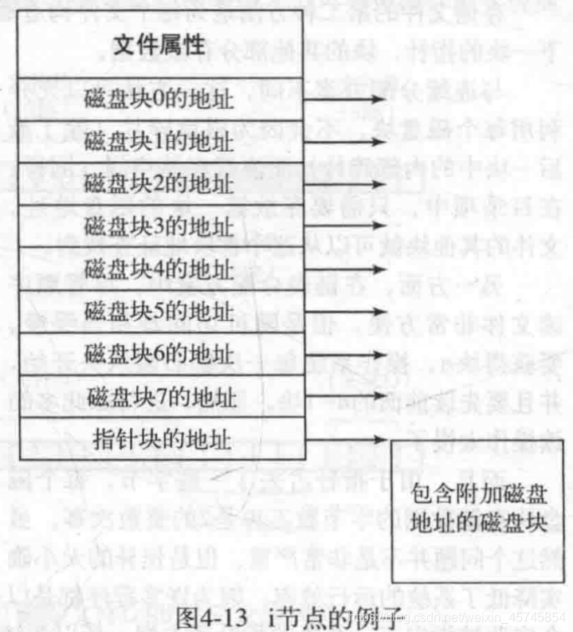
额外优点：
- 只有当文件打开，其inode才在内存中。内存中的inode个数正比于可能要同时打开的最大文件个数，与磁盘自身大小无关。
4.3.3 目录的实现
目录的主要功能是把ASCII文件名映射成定位文件需要的信息。譬如连续分配的文件需要磁盘地址和文件长度；链表+FAT分配的需要第一个物理块号；inode实现的需要其inode号。这些信息都是由目录提供的。
下面讨论几个目录实现的细节。
何处存放文件属性
- inode中。目录项更短，只需要文件名和inode号。UNIX文件系统广泛采用。
- 目录项中。目录项包含文件名、文件属性的结构体和用来定位文件位置的信息。MS-DOS文件系统（FAT文件系统）采用。
可变长文件名的实现
给文件名分配固定长度，譬如225字符。但是文件名大多不会这么长，会浪费目录空间。
可变长文件名，如下图两种实现
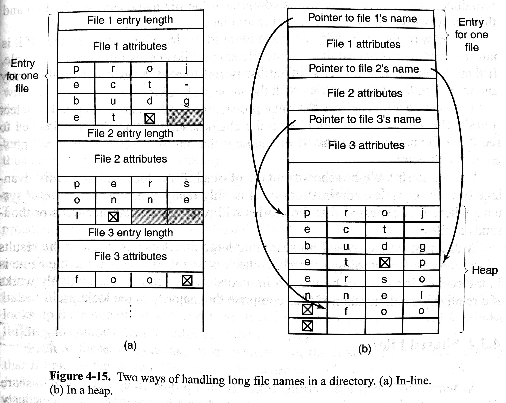
前者移除目录项后会产生外部碎片。后者需要额外管理一个堆。此外两者都可能使得一个目录项分布在多个页面上，读取时造成缺页中断。
快速查找目录中的文件
当目录很大时，顺序查找可能性能不佳。有两个小手段：
- 哈希表
- 把查找结果放入高速缓存，当然这建立在可能不存在的局部性上。
4.3.4 共享文件
参见4.2.4节。
4.3.5 日志结构文件系统
日志结构文件系统（log-structured file system, LSF）的提出基于以下动机：
- 内存大小不断增长。磁盘流量越来越多由写入组成。
- 随机I/O性能于顺序I/O性能之间存在巨大差距，且不断扩大。
- 现有文件系统在许多常见工作负载上表现不佳。有大量的随机I/O写入。
于是20世纪90年代早期，伯克利小组提出了LSF，希望充分利用磁盘的顺序写入带宽。其核心思想是：首先将所有更新（inode、目录块、数据块）缓存在内存段。当段（segment）已经满时，它会在一次长时间的顺序传输中写入磁盘。将磁盘看作是一个巨大的日志（log），每次写入在日志的最后。示意图如下：

虽然测试表明LSF比UNIX有更好的读写表现，但是由于与现有的文件系统不相容，没有被广泛采用。
这种设计也引入了额外的问题。
如何查找inode
LSF下inode不再保存在磁盘的固定位置。为了找到inode，我们需要维护inode map。inode map将inode号作为输入，并生成最新版本的inode磁盘地址。那inode map又放在哪里呢？为了顺序读写，inode map就放在所有其他新信息的位置旁边。可是又怎么找到inode map呢？LFS的磁盘上有一个固定的位置，称为检查点区域（checkpoint region），指向了最新的inode map的位置。
从磁盘读取文件的过程为：根据磁盘的检查点区域，读取整个inode map并存入内存。每当给出inode号时，LFS在inode map找到相应其在磁盘上的地址，并读入最新版本的inode。之后根据inode中磁盘块地址读取数据即可。
如何做垃圾清理
由于LSF总是将最新版本的文件写入磁盘上的新位置，所以磁盘上会分散旧版本的文件结构。基本清理过程如下：LSF清理程序定期读入许多旧的（部分使用的）段，确定哪些块在这些段中存在，然后写出一组新的段，只包含其中活着的块，从而释放旧块用于写入。具体来说，清理程序读取M个现有段，将其内容打包到N个新段（其中N<M），然后把这N个段写入磁盘的新位置，释放旧的M段，文件系统可以使用它们进行后续写入。
如何确定块的死活：It starts out by reading the summary of the first segment in the log to see which inodes and files are there. It then checks the current inode map to see if the inodes are still current and file blocks are still in use.
更多细节可以参考ostep第43章
4.3.6 日志文件系统
日志文件系统（journaling file system）的基本思想是：保存一个用于记录系统下一步要做什么的日志，如果系统在做计划好的工作前崩溃了，通过查看日志就可以恢复之前尚未完成的工作。微软的NTFS和Linux的ext3、ext4都采用了日志。具体细节在4.4.3节讨论。
4.3.7 虚拟文件系统
一个操作系统中也可能有不同的文件系统：
- Windows通过制定不同的盘符来处理文件系统，比如C:, D:等。进程打开文件时，盘符是隐式的，操作系统知道向哪个文件系统传递请求。
- UNIX将多个文件系统整合到一个统一的结构中。不同的目录可以有不同的文件系统。
下面讨论虚拟文件系统（virtual file system，VFS），大部分UNIX使用VFS的概念来将多个文件系统整合到一个统一的结构中。
VFS提供两层接口。上层给用户进程提供POSIX接口，下层给文件系统提供VFS interface。每个文件系统需要提供VFS要求的函数调用。如下图：
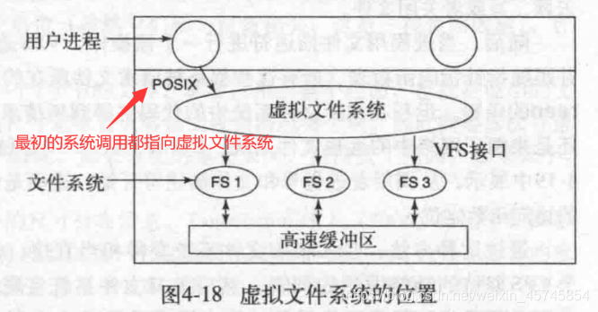
具体细节不再展开。
4.4 文件系统的管理和优化
4.4.1 磁盘空间管理
我们已经看到了存储n字节的文件有两种策略：
- 分配n字节的连续磁盘空间。文件扩大时，需要在磁盘上移动文件。有外部碎片等毛病。
- 文件系统分成很多个块，这些块不用在磁盘上连续。更被现代操作系统广泛采用。
下面讨论一些关于分块的更多细节
1）块大小
- 块过大：小文件来说浪费空间
- 块过小：分布更分散，寻道时间增加
2）记录空闲块
对4.3.1节空闲空间管理（free-space management）的进一步阐释。
- 空闲链表（free list）：由多个磁盘块组成链表，每个磁盘块存放空闲磁盘块号（故这些磁盘块称为空闲磁盘块）。一个1TB的磁盘，若采用1KB的块和32位的茨磁盘块号，需要大约4百万个1KB块存链表。
- 位图（bitmap）：每一个块用一位表示是否空闲。一个1TB的磁盘，若采用1KB的块，需要10亿位大小的位图，也就是约130000个1KB块存位图。比链表的实现所占的空间更小。
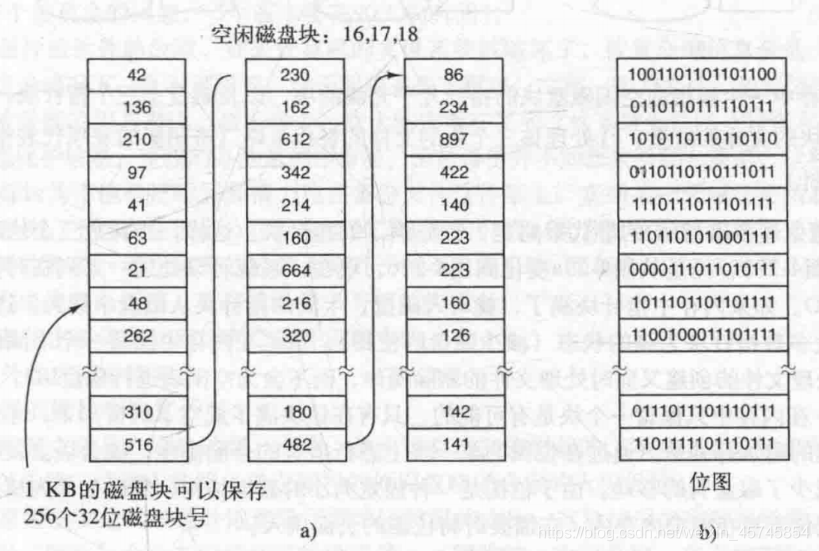
链表方案的一种变体
如果空闲块倾向于连续的长的分块，可以用空闲磁盘块号+长度来记录，从而降低所占空间。但是如果磁盘碎片较多，上述表达效果就不一定好了。
关于加载空闲链表到内存
并不会把整个空闲链表加载到内存，只需要加载一个空闲磁盘块就行了。下图中为了减少不必要的IO，图a增加三个空闲块后将变为图c，而不是图b。
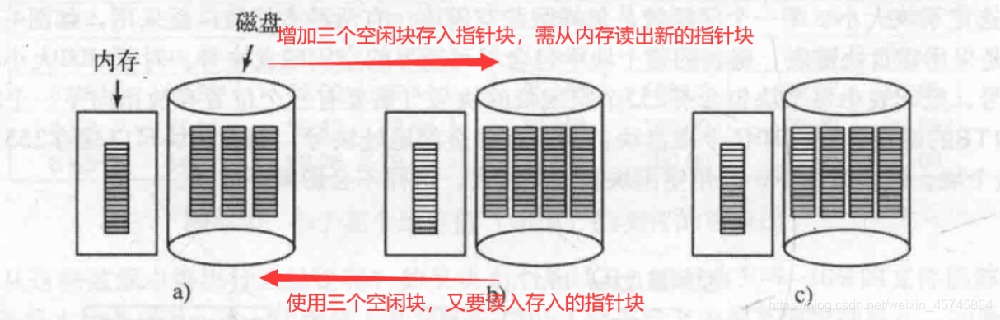
3）磁盘配额
防止用户占有过多的磁盘空间，多用户操作系统经常提供一个机制来强制执行磁盘配额。主要思想是：系统管理员给用户拥有的文件和块的最大数量，并由操作系统确保不超过限额。
4.4.2 文件系统备份
转储（dump）就当作是备份（back up）吧。可能有区别，但是不清楚。
1）为何要备份
- 从意外灾难中恢复：磁盘崩溃、火灾、洪水等
- 从愚蠢操作中恢复：不小心删除了文件。为此设计了回收站。
2）备份到哪里
另一块磁盘或者磁带等。
3）备份全部还是部分
部分。对于可从生产商网站或光盘安装的文件、temporary文件、特殊文件（IO设备）无需备份
4）增量转储（incremental dump）
无需备份上次备份已经备份的文件，只需备份新的和被修改过的文件。
5）备份前可以压缩
但是一个备份磁带上的坏点可能会破坏解压算法，使得文件乃至整个磁带不可读。
6）备份活跃文档
备份过程中添加、修改、删除文件和目录会导致文件系统的不一致性。所以建议脱机时备份，或者备份关键时刻快照。
7）非技术问题
你把公司的机密资料备份在磁盘上，并随意扔在桌子上，然后去楼下买杯咖啡。结果你的备份磁盘就被偷了。
8）如何备份
- 物理转储（physical dump）：从磁盘的第0块开始，一直复制，直到复制完。注意：未使用的磁盘块无需备份，于是备份磁盘的第k块不等于被备份的磁盘上的第k块，需要记录关系；坏块不存储。优点：简单快速。劣势：无法跳过特定目录、实现增量转储、备份特定文件等。并不被广泛采用。
- 逻辑转储（logical dump）：从一个或者几个制定的目录开始，递归地转储其自给定基准日期后有所更改的文件或目录。常见的转储方案。书上给出了一个基本算法，就是多次遍历文件树，对目录和文件进行转储。具体细节不再展开。对于链接文件只要备份和恢复一次。
4.4.3 崩溃一致性
本章参考了ostep第42章，更多细节可以看ostep
如果某个操作的完成有多个步骤，其中某一步做完后系统崩溃或断电，则会发生不一致（inconsistent）的情况。这个问题称为崩溃一致性问题（crash-consistency problem）。
考虑更新文件的例子
考虑写入需要三步：修改文件的inode、写入文件的data块，更新位图（如果需要更多数据块的话）。
其中的任两步操作之间都可能会系统崩溃，例如：
- 只写入了数据块：对于文件系统一致性毫无影响，仿佛写入没有发生过一样。只不过用户体验不好。
- 只写入了inode更新：由于数据块没有写入，因此如果根据inode读数据会读到垃圾
- 只写入了bitmap更新：问题很大，空间实际上没有被使用，但是显示已分配，故会导致空间泄露（并且如果不做处理，则会永远永远泄露，因为磁盘是长久存储）。
- 等等（两次成功写入，最后一次失败）
解决方案1：fsck
fsck（file system checker）是一个UNIX工具，不处理不一致的发生，而是在发生后修复他们。它无法解决所有问题（例如只写入了位图和inode但是没有写入数据，文件系统看上去一致，但是数据块是垃圾），唯一的目标是让文件系统内部一致。
以下是fsck的基本总结：
- 超级块检查：检查超级块是否合理
- 空闲块检查：扫描inode、间接块、双重间接块等等，以这些信息去更新bitmap（也就是说，比起bitmap，系统更信任inode的内容）
- inode状态：如果存在问题并且不易修复，则fsck直接清除该inode，并且更新相应的inode位图
- inode链接：检索引用计数，如果计算的计数与inode中的计数不一样，则更新inode中的计数；如果没有目录引用inode，则将该文件移动到lost + found目录
- 检查重复：如果两个inode引用同一个数据块，则会清除明显不对的inode，或者复制一份
- 坏块检查：扫描指针，如果指针显然不正确，则会删除该指针
- 目录检查：检查每个目录是否有
.和..，引用的每个inode是否已经分配等等
fsck问题：太慢了。出问题的一般都是少数文件，因此每次都扫描所有文件的代价太大了
解决方案2：日志（我只摘取了部分内容）
思想是：每次写磁盘之前，都先写日志（journaling），崩溃后可以从日志中恢复。日志也称做预写日志（write-ahead logging）。许多现代文件系统（ext3、ext4、NTFS等）都使用了这个想法。下面看具体实现。
日志放在哪：可以放在磁盘上超级块的旁边
数据日志
日志类型（和转储类似）
- 物理日志：日志内容即写入的数据内容。为表述简单，我们只考虑物理日志。
- 逻辑日志：日志内容指引数据如何修改。可以节省空间，但是更复杂
操作
- 每次写磁盘数据之前，都先写TxB（起始标识）、待写数据（inode、位图、数据块）、TxE（结束标识）进磁盘日志区
- 写完TxE后，将数据写入磁盘数据块（这个步骤称为加检查点）
恢复
- 如果日志不完整（没有TxE），则跳过该日志。用户写入的新数据丢失，但是一致性没有被破坏
- 如果日志完整，则重做日志。即使该事务已经执行完毕，重做也不影响，仅仅是进行了冗余操作。由于崩溃不常发生，故可以接受。
元数据日志
上述数据日志，在每次写入磁盘时，需要先写入日志，从而使得写入流量加倍。事实上只需要采用特定的写入顺序，文件的数据块不必写入日志。具体步骤如下：
- 数据写入磁盘
- 日志写入开始块和元数据
- 日志提交，将事物提交块写入日志，等待写完成
- 加检查点元数据
- 释放已经加检查点的日志
其中1和2顺序不限定，但是3必须在1、2都完成后再做
4.4.4 文件系统性能
下面讨论几种提高磁盘访问速度。
1）高速缓存
在内存中为磁盘盘块设置的一个缓冲区，在缓冲区中保存了某些盘块的副本。快速查找缓冲区是否有目标盘块的副本可用哈希表。缓存满了，用页面置换算法就行了。
2）块提前读
不就是预取（prefetching）吗
3）减少磁盘臂运动
之前我们一直假定inode放在磁盘最开始的块中（如下图a），这导致访问inode和相应数据块需要大量的寻道时间。一些现代文件系统（ext2，ext3）将磁盘划分为一些分组，称为柱面组（cylinder group）或者块组（block group）。同一组有多个文件，有自己的超级块、inode和空闲内存管理部分。这可以减少寻道时间。
不过对于SSD，就没有这种问题了。
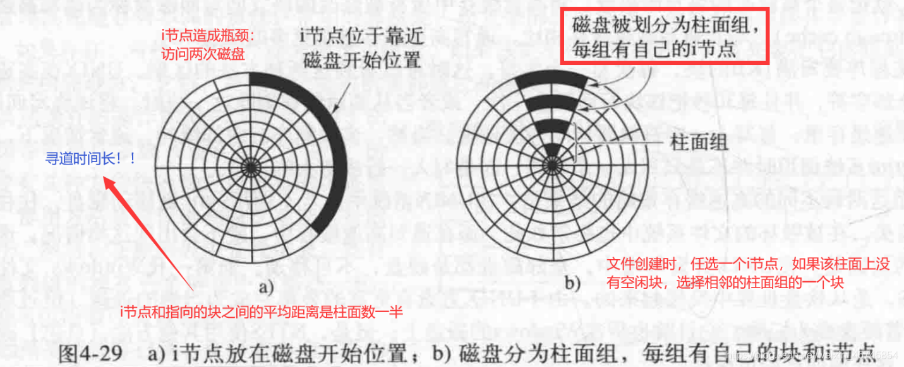
4.5 案例
介绍了MS-DOS系统的FAT-12,FAT-16和FAT-32文件系统（磁盘地址分别为12、16和32位），UNIX V7文件系统，以及CD-ROM的ISO 9660文件系统及其Rock Ridge扩展、Joliet扩展。主要关心了目录项的设计，我也没有认真看😀
五、输入/输出
操作系统需要管理所有计算机的输入输出设备。需要给I/O设备发送指令、捕捉中断和处理错误，还需要给I/O设备和其余系统之间提供一个简单易用的接口。本章从I/O硬件出发，然后探讨I/O软件，最后研究具体的几个IO设备。限于本人时间，主要粗略整理了IO硬件、IO软件和磁盘三个部分，其他内容一笔代过。整章的读+整理只用了两天，可能理解程度不如其他章节。
5.1 I/O硬件原理
划定讨论范围：We are concerned with programming I/O devices, not designing, building, or maintaining them, so our interest is in how the hardware is programmed, not how it works inside.
5.1.1 I/O设备
可以分成两类：
- block device：以固定大小的块（512～65536 bytes）存储信息，每个块有自己的地址，每次传送以块为单位。例子：磁盘
- character device：以字符串的信息接受传递信息，没有块的概念。例子：打印机、鼠标
但是分类并不是完美的。譬如时钟就不属于其中任意一类。
5.1.2 设备控制器
I/O unit = mechanical component + electronic component。其中机械部分就是设备自身，电子部分称为设备控制器（device controller）或者适配器（adapter）。通常设备控制器是主板上的芯片或者一个可以插入PCIe扩展槽的印刷电路板。如下图：
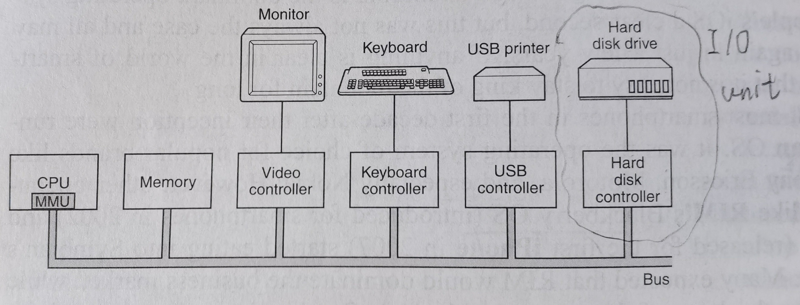
控制器上可以有多个接口，只要满足相应协议的设备都能连接上。磁盘控制器的工作是将读取的比特串转化为字节块，并做一些必要的错误检查和修正。LCD显示器控制器的工作是将输入的字符转换为信号，来修改屏幕上的相应像素。
5.1.3 I/O映射
每个设备控制器有一些控制寄存器（control register）来和CPU交流。此外，许多设备还有自己的数据缓冲区，允许操作系统读写，譬如显存。CPU如何和这些控制寄存器和数据缓冲区交流呢？有三种I/O映射的方法：
- 分离式IO（isolated I/O）：每个控制寄存器有自己的IO端口（IO port）号，并组成了IO端口空间（I/O port space），与内存地址空间独立；需要IO和内存选择控制线；需要特别的IO指令（譬如
IN REG, PORT将端口数据读入寄存器，OUT PORT, REG将寄存器数据读到端口。指令不再是MOV。REG是通用寄存器，PORT`是IO设备的控制寄存器） - 内存映射IO（memory-mapped I/O）：将所有控制寄存器映射到内存地址空间，IO设备和内存共享地址空间；IO读写看起来内存读写；不需要为IO单独设计指令
- 混合方案（hybrid scheme）：上面两种IO映射共存。x86就使用这种方案。
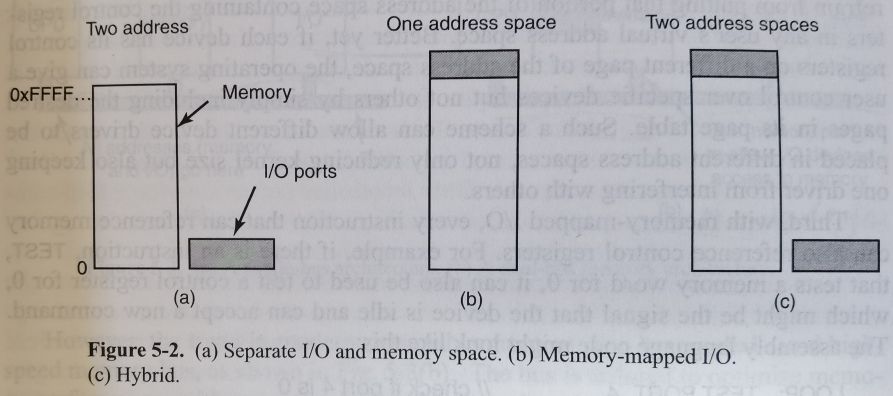
如何工作：当CPU想要读取数据时，先把地址放在地址总线，再设置总线控制线的READ信号。如果是分离式IO，需要设置IO和内存选择控制线；如果是内存映射IO，IO设备和内存都需要读取地址，并判断该地址在不在自己的范围内（由于内存和IO设备的地址不相交，所以不会产生冲突）。
优劣分析（以内存映射为例）：
优势：
- 设备控制寄存器就像是内存中的变量，可以由C程序访问。而分离式IO需要单独的指令访问IO，在C语言中无相应的语法，需要汇编程序来访问分离式IO。
- 限制用户访问IO设备变得简单。只需将包含设备控制寄存器的内存不放入（或部分放入）用户的虚拟地址空间即可。
- 无需更多的指令。那些原来可以访问内存的指令仍然可以访问控制寄存器。可以减少程序指令数（譬如
TEST PORT=IN REG PORT+TEST REG，少了一个指令）
劣势：
- 不可以缓存控制寄存器，每次应当直接对IO设备进行读写。否则当IO设备状态改变时，CPU将从缓存中得到过时的数据。在3.3.1节我们看到页表项中有caching disabled bit来禁止缓存控制寄存器。可见这会引入一些硬件和软件上的复杂性。
- 当下个人电脑倾向于为CPU和内存设计高速专用的内存总线。这使得传送在内存总线上的数据将无法到达IO设备。为此可以：法一，先将所有内存访问传送到内存，如果内存无法响应，则将该内存访问通过其他总线传送到IO设备；法二：在内存总线放一个嗅探器，把可能是IO设备的地址传送到IO设备；法三：内存控制器知道IO设备的地址，把这些地址传送到IO设备。
5.1.4 直接存储器存取
直接存储器存取（direct memory access, DMA）使得IO设备可以直接和内存进行数据传输。CPU只需要告诉DMA控制器内存地址信息、传送数据大小、IO端口号、传送方向、传送单元大小（one byte/word at a time）等。DMA控制器通常集成在主板上。
当没有DMA时，磁盘读取过程类似为：磁盘控制器读取目标磁盘块，将比特流写入自己内部的缓冲区；磁盘控制器计算校验和，确认没有错误发生；磁盘控制器产生中断；操作系统一个字一个字（或者一个字节一个字节）读取磁盘控制器缓冲区的数据，并写入主存。
当有DMA时，CPU先编程DMA处理器，并通知磁盘控制器在缓冲区中准备好相应的数据并作校验检查（step1），当磁盘控制器缓冲区数据准备好后，DMA开始干活；DMA控制器通过总线向磁盘控制器发送读取请求（step2）；磁盘控制器将数据写入内存（step3）；磁盘控制器发送Ack信号给DMA控制器（step4）；DMA控制器增加地址寄存器的值、减少计数寄存器的值，如果计数不为0，重复步骤2～4；DMA控制器发送中断给CPU，告知所有传送已经结束。如下图
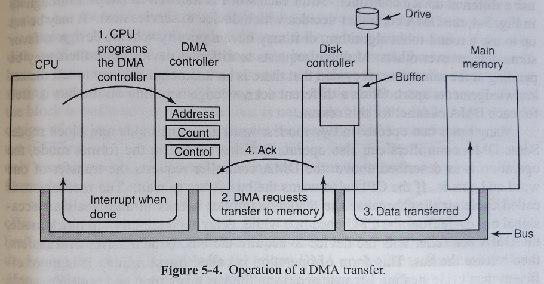
一些复杂的DMA控制器可以有多组寄存器，同时处理多个传输。
DMA控制器可以以字为单位传送数据，也可以以块为单位传送数据。前者会偷总线周期（cycle stealing）——在DMA控制器使用总线时，CPU无法使用总线。后者称为burst mode，减少获取总线等额外耗时的同时也会造成CPU大段时间无法使用总线。
之前我们讨论的方案是将磁盘控制器的数据直接传送到主存，这称为fly-by mode。但其实也可以先将数据传送到DMA控制器，再从DMA控制器传送到主存，这使得IO设备之间传送数据变得简单，但也引入了额外的总线周期。
大部分DMA控制器使用的是物理地址。CPU内部的MMU先将虚拟地址翻译为物理地址，再送到DMA中。
并不是所有计算机都使用DMA。由于CPU比DMA控制器快很多，有的时候CPU需要等待DMA，而自己无事可做。
5.1.5 重温中断
大部分内容已经在第二章开头以及2.1.6节提及。这里介绍精确中断（precise interrupt）和不精确中断（imprecise interrupt）。精准中断需要满足：
- 产生中断的指令前的所有指令都已完成
- 产生中断的指令包括后续指令没有改变任何机器状态。
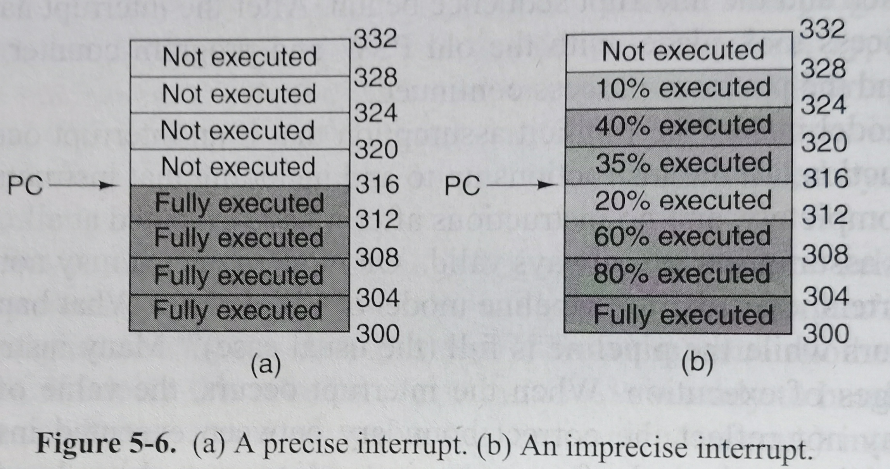
在计组整理的4.3节有一个具体的五级流水精确中断的实现，这里则更从理论上看待问题。
不精确中断给操作系统设计者带来了麻烦。当采用不精确中断时，机器将把大量的内部状态写入栈，让操作系统自己搞清楚发生了什么。这使得处理中断很缓慢。精确中断则给CPU设计者带来了麻烦。超标量处理器乱序执行指令使得后头的指令反而先完成。如何避免后续指令改变机器状态，给CPU设计者带来了挑战。
5.2 I/O软件原理
5.2.1 I/O软件的目标
目标有：
- device independence: We should be able to write programs that can access any I/O device without having to specify the device in advance.
- uniform naming: The name fo a file or a device should simply be a string or an integer and not depend on the device in any way. e.g. by a path name, just like a file
- error handling: Errors should be handled as close to the hardware as possible. In many cases, error recovery can be done transparently at a low level without the upper levels even knowing about the error.
- synchronous (blocking) vs. asynchronous (interrupt-driven) transfer
- buffering
- sharable vs. dedicated devices: e.g. Disks can be used by many users at the same time, while printers have to dedicated to a single user until that user is finished.
5.2.2 程序控制I/O
5.2.2～5.2.4考虑一个无缓冲区的打印机打印问题。每次传送一个字符给打印机，打印完后，再传送下一个字符。
程序控制I/O（programmed IO）下，I/O设备不会通知CPU它已经完成任务了，CPU需要轮询（polling）或者忙等（busy waiting），不断查看IO设备状态。实现起来简单，但是CPU会浪费时间在检查IO设备状态上。
5.2.3 中断驱动I/O
中断驱动I/O（interrupt-driven I/O）下，I/O设备在任务完成后会产生中断通知CPU。CPU不必忙等IO设备，可以自己去做其他的任务。但在本例中，打印会产生大量的中断（一个字符一个中断），也降低了CPU的性能。
5.2.4 使用DMA的I/O
把任务交给DMA，当DMA完成后，使用一个中断通知CPU。DMA本质上是程序控制I/O。整个工作CPU只会被中断一次。即便存在CPU需要等待DMA而自己无事可做的可能性，但是通常来说DMA很优秀。
5.3 I/O软件层次
如图所示有四层：
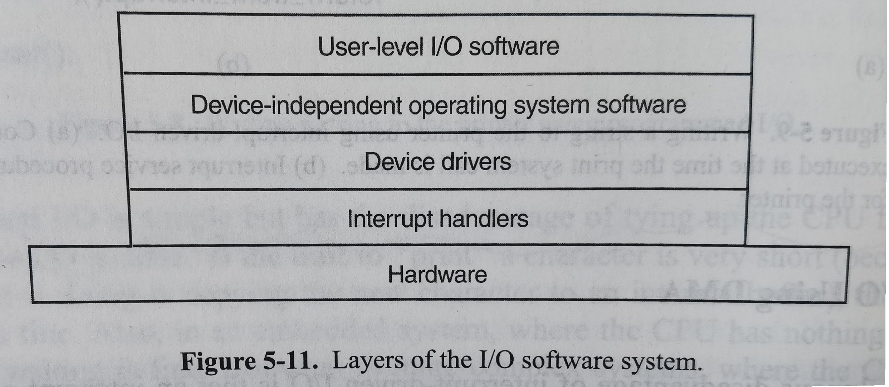
5.3.1 中断处理程序
之所以将中断处理程序放在最底层，是想让操作系统中尽可能少的部分知道中断。当中断发生后，设备驱动程序将被阻塞，中断处理程序开始运行。
5.3.2 设备驱动程序
IO设备需要一些device-specific代码来控制，这些代码称为驱动（driver）。一般驱动程序都是由设备生产商写的，不同的操作系统需要不同的驱动程序。驱动程序一般在内核。逻辑如下图：
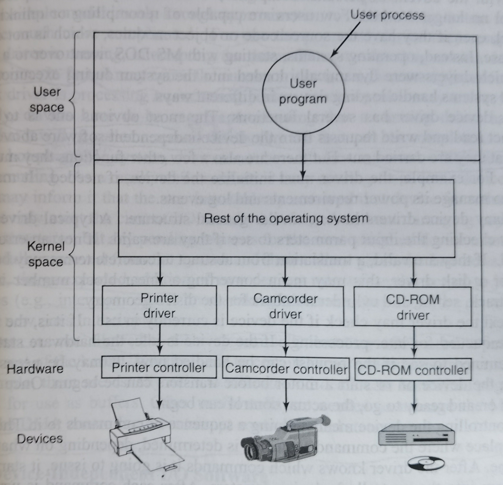
以前有新的驱动就重新编译一下内核。但是随着个人电脑时代来临，普通用户没有能力重新编译链接内核，也没有源码，驱动通常是通过在执行时动态加载到内核的。
驱动主要是把来自与设备无关I/O软件的抽象的读写操作，转换为对IO设备的寄存器设置。此外驱动会将多个请求被放入队列等待、给设备控制器发送一系列指令、检查一些设备控制器的返回值等等。
5.3.3 与设备无关的I/O软件
The basic function of the device-independent software is to perform the I/O functions that are common to all devices and to provide a uniform interface to the user-level software. 具体包含：
- uniform interfacing for device drivers: make all I/O devices and drivers look more or less the same
- buffering: 单缓冲区，双缓冲区，环形缓冲区
- error reporting
- allocating and releasing dedicated devices
- providing a device-independent block size
更多细节可以看书，我其实看的不是很懂这里
5.3.4 用户空间的I/O软件
一般而言，大部分的 I/O 软件都在操作系统内部，但仍有一小部分在用户层，包括系统调用（由库函数实现，譬如read、write函数），以及完全运行于内核之外的假脱机（spooling）系统等。假脱机已经在6.5.1和2.3.1讲过了。
5.4 磁盘
磁盘的基本常识已经在计组整理的5.1.3节提及了。所有现代的磁盘都支持逻辑区块地址（logical block addressing），即每个扇区依次从0开始编码，不再考虑磁盘的几何位置。
5.4.1 RAID
廉价冗余磁盘阵列（redundant array of inexpensive disks, RAID）使用多个磁盘一起构建了更快更大更可靠的磁盘系统。在操作系统看来RAID就像一个大磁盘，操作系统无需任何的修改就可以使用RAID。下面依次介绍RAID level 0 ～ RAID level 6.
- level 0 条带化：本书上说一个条带（strip）由k个扇区组成，扇区0～k-1组成条带0，k～2k-1组成条带1，按照如图所示的方法在多个磁盘上分配。但是ostep上说以轮转的方式将磁盘阵列的块分布在磁盘上，同一行中的块称为条带（譬如块0～3依次在四个磁盘上，这四个块称为一个条带），和本书略有出入。条带化对于大读写性能很好，可以充分利用多个磁盘的并行性；容量也很好，每个磁盘都存了独一无二的数据。但是可靠性很差，任何磁盘故障都会导致数据丢失。没有冗余磁盘，从这个角度来看RAID-0并不是一个真正的RAID。
- level 1 镜像：复制每个磁盘，图中有四个原始磁盘和四个备份磁盘（阴影）。RAID-1还可以分成RAID-10和RAID-01，RAID-10先镜像后条带，RAID-01先条带后镜像。图中所示的是RAID-01，若以1和5，2和6，3和7，4和8这样顺序摆放，就成为RAID-10. 该例中写入性能和RAID-0一致（原始磁盘和备份磁盘的写入并行进行），但是读取性能可以翻倍，因为数据可以分成两半一起从两个磁盘读取。
- level 2：以字或者字节为单位读写。本例中七个磁盘每次传送一位，其中bit1、2、4是奇偶校验位，这七位组成了Hamming code。任何一位出错，都可以利用Hamming code解决。缺点是所有的磁盘需要旋转同步（要求大量控制单元），每传一位数据就要计算一次Hamming校验和。
- level 3：只使用一个奇偶校验位（偶数个1，返回0；奇数个1，返回1. 其实就是进行异或运算。包括校验位后一共有偶数个1）。初看来只能检查出错误，不能改正错误。但如果错误的位的位置知道的话，就可以改正错误了。
- level 4：该例中，P0-3是strip0～strip3的异或结果。允许一个磁盘故障。每次写入都要更新存放奇偶校验的磁盘，阻碍了写入的并行性。该问题称为基于奇偶校验的RAID的小写入问题（small-write problem）。
- level 5：针对RAID-4的小写入问题，将奇偶校验结果按照如同所示分配。
- level 6：备份奇偶校验结果。如图所示。
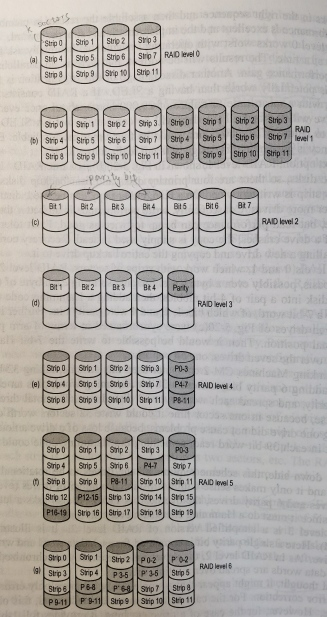
5.4.2 磁盘格式化
磁盘扇区包含：
- preamble（前导码）：由一些特定位开始，来允许硬件识别扇区的开始。包含柱面和扇区号等其他信息。
- data：数据部分的大小由低级格式化程序来确定。大部分磁盘使用 512 字节的扇区。（额，所以512字节报不包含preamble和ECC呢）
- ECC：error correcting code，用来帮助从读取错误中恢复。ECC 大小的设计标准取决于设计者愿意牺牲多少磁盘空间来提高可靠性，16字节大并不少见。
除此之外，硬盘一般具有一定数量的备用扇区，用于替换制造缺陷的扇区。
低级格式化后的每个 0 扇区的位置都和前一个磁道存在偏移，这种方式又被称为柱面斜进(cylinder skew)。之所以采用这种方式是为了提高程序的运行性能。可以这样想，磁盘在转动的过程中会经由磁头来读取扇区信息，在读取内侧一圈扇区数据后，磁头会进行向外侧磁道的寻址操作，寻址操作的同时磁盘在继续转动，如果不采用这种方式，可能刚好磁头寻址到外侧，0 号扇区已经转过了磁头，所以需要旋转一圈才能等到它继续读取，通过柱面斜进的方式可以消除这一问题。不只有柱面存在斜进，切换磁头也会存在斜进，但是磁头斜进(head skew)比较小。
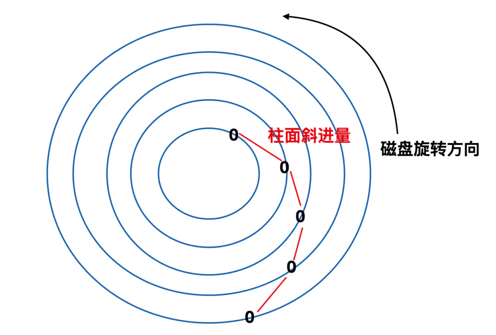
低级格式化后，磁盘容量会减少。这是因为有前导码、扇区间间隙、ECC、备用扇区等。低级格式化后，磁盘完成了分区，拥有了主引导记录和分区表。之后还要对每个分区分别执行一次高级格式化，这一操作要设置一个引导块、空闲存储管理（采用位图或者是空闲列表）、根目录和空文件系统。最后形成了4.3.1节所示的模样。
5.4.3 磁盘臂调度算法
一般情况下，影响磁盘快读写的时间由下面几个因素决定
- 寻道时间（seek time）：将磁盘臂移动到目标柱面的时间
- 旋转延迟（rotational delay）：目标扇区旋转到磁头下所需的时间
- 实际数据的传送时间
通常寻道时间比重远大于其他两者，下面讨论磁盘臂调度算法。考虑有0-199个柱面，请求队列为98,183,37, 122, 14, 124, 65, 67. 磁头现在在53号柱面。
FCFS（first come first serve）

SSTF（shortest seek time first）

SCAN：The disk arm starts at one end of the disk, and moves toward the other end, servicing requests until it gets to the other end of the disk, where the head movement is reversed and service continues. 注意到要走到头的。

C-SCAN：The head moves from one end of the disk to the other, servicing requests as it goes. When it reaches the other end, it immediately returns to the beginning of the disk, without servicing any requests on the return trip.

C-LOOK：Arm only goes as far as the last request in each direction, then reverses direction immediately, without first going all the way to the end of the disk.

对于磁盘来说，最影响性能的就是寻道时间和旋转延迟，所以一次只读取一个或两个扇区的效率是非常低的。出于这个原因，许多磁盘控制器总是读出多个扇区并进行高速缓存，即使只请求一个扇区时也是这样。一般情况下读取一个扇区的同时会读取该扇区所在的磁道或者是所有剩余的扇区被读出，读出扇区的数量取决于控制器的高速缓存中有多少可用的空间。
5.4.4 错误处理
磁盘在制造的过程中可能会有瑕疵，如果瑕疵比较小，比如只有几位，那么使用坏扇区并且每次只是让 ECC 纠正错误是可行的，如果瑕疵较大，那么错误就不可能被掩盖。这就需要备用扇区了。有如下两种替换策略：
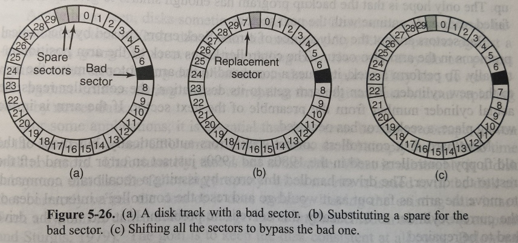
如何实现上面的映射呢，可以由控制器或者操作系统实现。可以通过内部的表来跟踪这一信息，或者通过重写前导码来给出重新映射的扇区号。具体细节不展开。
5.4.5 稳定存储器没有看
5.5 其他
接下来书上洋洋洒洒花了40页篇幅介绍了时钟、键盘、鼠标、显示器、瘦客户机（thin client）、以及电源管理。瘦客户机似乎没有明确的定义，可以看看google的Chromebook。个人觉得这些东西对目前我来说并不是什么重要的话题，其实也没有看书上相关内容。
六、死锁
6.1 引入
6.1.1 定义
首先回答，何为死锁（deadlock）？
正式定义：
A set of process is deadlocked if each process in the set is waiting for an event that only another process in the set can cause.
翻译一下：
一个集合中的所有进程都在等待该集合中的其他进程能产生的事件，我们称这些进程中产生了死锁。而正是因为所有的进程都在等待，所以没有进程能产生唤醒其他进程的事件，这导致大家一起睡觉，活都不干了。
再举个🌰:
- 文字描述：进程A持有资源1，请求资源2；进程B持有资源2，请求资源1。此时产生了死锁。进程A和B永远阻塞下去。
- 信号量描述：（注意到这里的信号量其实就是资源）
xxxxxxxxxx// code with a potential deadlocksemaphore resouce_1;semaphore resouce_2;void process_A(void) { down(&resouce_1); down(&resource_2); use_both_resource(); up(&resource_2); up(&resource_1);}void process_B(void) { down(&resouce_2); down(&resource_1); use_both_resource(); up(&resource_1); up(&resource_2);}6.1.2 资源
继续下去前，需要明确资源（resouce）的含义。
是什么：anything that must be acquired, used, and released over the course of time, including hardware devices (e.g. a Blu-ray drive), data records (i.e. something in a database), files, and so forth
分类：可抢占和不可抢占
- preemptable resource: can be taken away from the process owning it with no ill effects. For example, memory is usually a kind of preemptable resource, for pages can always be swapped out to disk to recover it.
- nonpreemptable resource: cannot be taken away from its current owner without potentially causing failure. For example, If a process has begun to burn a Blu-ray, suddenly taking the Blu-ray recorder away from it and giving it to another process will result in a garbled Blu-ray.
- 需要明确，是否是可抢占还需要看具体实现，比如在一个不支持swapping和paging的手机上，我们无法通过页交换来避免死锁。此时内存就变成了不可抢占资源。
进程请求资源、使用资源、最后释放资源。我们假定无法请求到所有资源的进程会阻塞，但阻塞时并不会释放已经占有的资源；我们还假定请求到所有资源的进程在有限时间内（工作结束后）会释放所有资源，而不是永久占用下去。
注意到我们现在讨论的死锁都是资源死锁（resource deadlock），是由于进程永久等待等不到的不可抢占资源所产生的死锁。可能是最常见的死锁类型了，其他类型我们按下不表。
6.1.3 产生条件
应该是资源死锁的充要条件吧，一共四条：
- Mutual exclusion condition. Each resource is either currently assigned to exactly one process or is available.
- Hold-and-wait condition. Process currently holding resources that were granted earlier can request new resources.
- No-preemption condition. Resources previously granted cannot be forcibly taken away from a process. They must be explicitly released by the process holding them.
- Circular wait condition. There must be a circular list of two or more processes, each of which is waiting for a resource held by the next member of the chain.
6.1.4 资源分配图
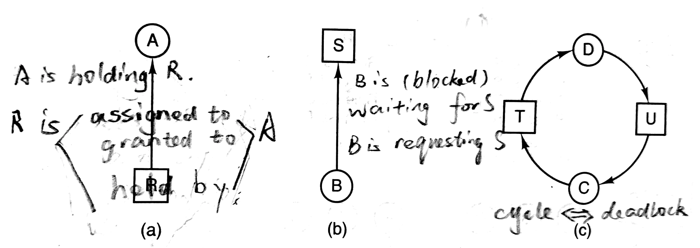
在资源分配图（resource allocation graph）中，进程用圆圈表示，资源用方块表示。图a表示进程A持有资源R；图b表示进程B请求资源S，求之不得，于是阻塞；图c意指，图中有环与死锁充要（仅在一种资源单个的情况下成立）。
对于一种资源有多个的情况，也可以利用资源分配图表示，下图摘自恐龙书：

注意到，此时有环，并不意味着有死锁。上图中，P2用完R1会归还，P4用完R2会归还，死锁不会产生。
6.1.5 解决策略
解决死锁有四个策略：
- Just ignore the problem. Maybe if you ignore it, it will ignore you.
- Detection and recovery. Let them occur, detect them, and take action.
- Dynamic avoidance by careful resource allocation.
- Prevention, by structurally negating one of the four conditions (mentioned in 6.1.3).
下面6.2～6.5节依次讨论上述解决策略。
6.2 鸵鸟算法
鸵鸟算法（ostrich algorithm）就是直接忽略问题。对于那些几乎不发生、解决起来特别麻烦的死锁问题，忽视这种死锁的存在是一个说的过去的算法。
6.3 死锁检测和修复
让死锁发生，找到它，并修复它。
6.3.1 每种类型一个资源的死锁检查
利用6.1.4节中的资源分配图，判断该有向图是否无环，无环则没有死锁，有环则存在死锁。判断算法利用DFS就好了，这里不再展开。
6.3.2 每种类型多个资源的死锁检查
由6.1.4节可见，当每种类型有多个资源时，有环已经不能作为存在死锁的判据了。需要提出新的算法，其实也很自然。
维护四个矩阵E (existing resource vector)、A (available resource vector)、C (current allocation matrix)、R (request matrix)，定义为：
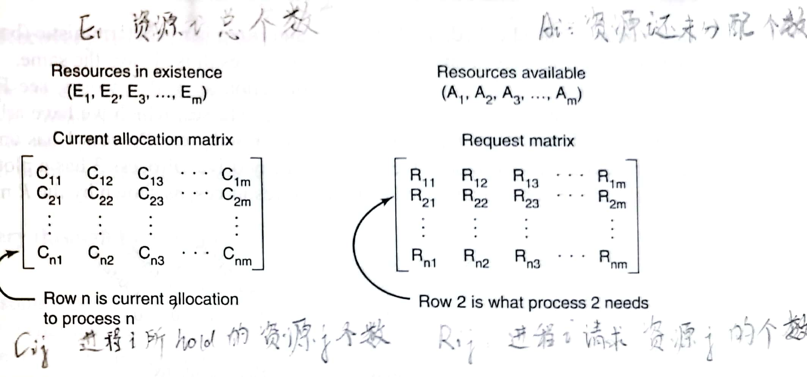
显然四个矩阵具有等式：
再定义行向量
- Look for an unmarked process, Pi, for which the ith row of R is less than or equal to A.
- If such a process is found, add the ith row of C to A, mark the process, and go back to step 1.
- If no such process exists, the algorithm terminates. When the algorithm terminates, all the unmarked processes, if any, are deadlocked.
什么时候运行该算法呢？有这么几种参考：
- 每当资源请求发生时。优势：尽早发生问题；劣势：占用过多CPU时间
- 每k分钟检查一次
- 当CPU使用率低于某个阈值时
6.3.3 从死锁中恢复
发现死锁后就要处理喽，有这么三种想法
Recovery through Preemption
从当前拥有者那里抢占资源。在很多时候需要人工介入，特别是大型机的批处理系统。比如打印机打文件A打了一半，我给它中止掉，把打好的部分文件A先放在一边，然后叫打印机去打印文件B，文件B打好后，再从文件A剩余部分开始打印。
资源的可抢占性主要取决于资源本身，把资源还给被抢占的进程并不是一件易事。
Recovery through Rollback
设置检查点（checkpoint），记录下此时进程的内存快照、资源状态等。When a deadlock is detected, it is to see which resources are needed. To do the recovery, a process that owns a needed resource is rolled back to a point in time before it acquired that resource by starting at one of its earlier checkpoints.
Recovery through Killing Processes
杀死一些进程来释放所需的资源。最理想的杀死目标是那些可以从头重新运行且不会造成坏影响的进程，比如编译器。
6.4 死锁避免
在讨论死锁检查时，我们默认进程请求资源是一蹴而就的，但实际上大部分系统资源都是一个一个请求的。那我们分配资源的时候，有没有算法来制定分配顺序来避免死锁呢？答案是有的，但是要率先知道一些特定的信息。
6.4.1 资源轨迹图
这里用资源轨迹图（resource trajectory）来给出一个直观的理解。
这里假设只有一个打印机和一个绘图机。一些读图提示（我懒的写详细了）：在指令I1到I3时进程A使用打印机；虚线上的点的横坐标对应着进程A执行到的指令，纵坐标对应着进程B执行到的指令；虚线只能朝上或者朝右走；I1,2,...,8之间还有指令的。
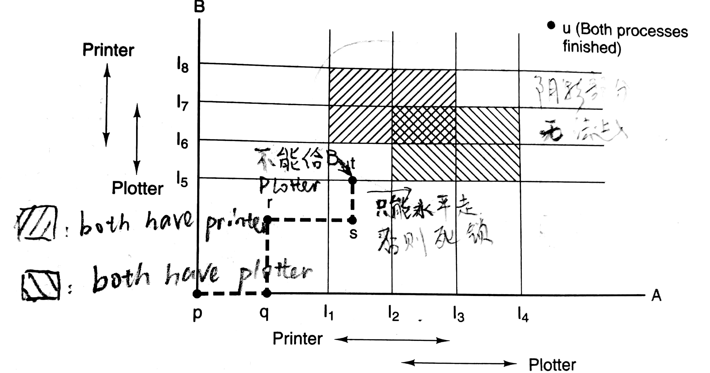
6.4.2 安全状态和不安全状态
当存在一种执行顺序，使得进程们不会产生死锁，那称它们处于安全状态（safe state）；否则称为不安全状态（unsafe state）。举个例子，现在资源有10份，ABC三个进程如下：
| 情况1 | 已占有 | 总需要 | 情况2 | 已占有 | 总需要 | |
|---|---|---|---|---|---|---|
| A | 3 | 9 | A | 4 | 9 | |
| B | 2 | 4 | B | 2 | 4 | |
| C | 2 | 7 | C | 2 | 7 |
情况1就是处于安全状态，我们可以先把三份空闲资源中两份给B，B运行完后空闲资源有5份，然后全部分配给C，C运行完空闲资源编程7份，取六份给A就行了。相应的，情况2就处于不安全状态。
注意到不安全不意味着死锁。情况2的进程B可以运行结束，再若进程C可以抢占进程A中的一份资源（或者A somehow就释放了一份资源，日后再获取它），那么所有进程都可以运行结束。不安全只是意味着没有保障来保证所有进程都可以结束，而不是进程一定不可以结束。
6.4.3 单种资源的银行家算法
简单来说，就是每次请求发生后，我看看若满足它的请求，会不会进入不安全状态，如果会的话，就推迟这个请求，不会的话，就满足这个请求。比如总共十份资源，进程ABCD三个时刻为：
| 进程 | 时刻1 | 时刻2 | 时刻3 | 总需要 |
|---|---|---|---|---|
| A | 1 | 1 | 1 | 6 |
| B | 0 | 1 | 2 | 5 |
| C | 2 | 2 | 2 | 4 |
| D | 4 | 4 | 4 | 7 |
时刻2是安全的，于是对于时刻1进程B的请求要满足；时刻3是不安全的，于是对于时刻2进程B的请求要推迟。
称之为银行家算法（banker's algorithm），是因为“总需要”如同信用额度（credit line），每时刻进程占据的资源数目如同已经向银行贷款的数目。
6.4.4 多种资源的银行家算法
就是6.3.2中判断死锁的算法。。。唯一改变是R (request matrix)被明确定义为进程还需要的资源，之前是进程总共所需的资源。现在强调我已经占据了一些资源，目前还需要多少资源。
银行家算法最早由Dijkstra在1965年提出，从此讨论该算法的文章层出不穷，但是事实上该算法没什么用，因为进程难以提前知道它总共需要的资源数。
6.5 死锁预防
避免死锁几乎不可能。在实际情况下，我们更多地通过破坏6.1.3中提出来的四个条件中的任何一个，就可以从结构上来预防（prevent）死锁。总结为：
| Condition | Approach |
|---|---|
| Mutual exclusion | Spool everything |
| Hold and wait | Request all resources initially |
| No preemption | Take resources away |
| Circular wait | Order resources numerically |
6.5.1 破坏互斥条件
如果资源不再可以被互斥地分配给进程，就可以避免死锁。一个想法是通过假脱机（spooling）实现，也就是先把数据存储到spooling directory，然后只允许一个特殊的进程（daemon，守护进程）访问。比如只允许打印机守护进程（printer daemon）访问物理打印机，其他进程只是将要打印内容写到某个地方（spooling space），这就不会产生因打印机而产生死锁了。当然若spooling space太小，两个进程文件都才写到一半，还是会产生死锁。
6.5.2 破坏占有并等待条件
如果我们不允许持有资源的进程等待其他资源，就可以避免死锁。一种实现方法是，进程在开始执行前就请求所有的资源。困难：进程难以在开始前知道需要多少资源。劣势：资源没有充分利用，出现占着茅坑不拉屎。但是确实有些大型机的批处理系统要求用户在每个任务前列出所需资源。
6.5.3 破坏不可抢占条件
哈，我缺少资源A，那就从别的进程抢一个过来！想法很恶劣，但是虚拟化可以帮助破坏不可抢占条件。比如6.5.1提及的假脱机（spooling），打印机就被虚拟化了。但是一个资源能不能虚拟化取决于资源本身特性。
6.5.4 破坏环路等待条件
一个想法是，我把所有资源排好序，进程必须按照顺序请求资源。其实挺好理解的，设置6.1.1中的进程A与进程B关于两个资源的请求顺序相同，就可以避免死锁。难点在于，如何设置顺序来满足所有人。
6.6 其他问题
6.6.1 两阶段加锁
对于数据库系统，我们可以采用两阶段加锁（two-phase locking）：
- first phase: The process tries to lock all the records (就当作是数据库中的数据吧，record具体是啥我也不清楚) it needs, one at a time. If it succeeds, it begins the second phase.
- second phase: The process performs its updates and releases the locks.
就是6.5.2的思路。
6.6.2 通信死锁
之前我们讨论的资源死锁是竞争同步（competition synchronization）所产生的问题，在6.1.2曾提及死锁种类不止一种，对于协作同步（cooperation synchronization），我们会产生通信死锁（communication deadlock）。前者是因为资源被占用而产生的死锁，后者是因为进程无法独立进行而产生的死锁。
考虑一个网络上，进程A发送了消息给进程B，然后阻塞等待B的回复，B回复完也阻塞了，结果B的回复丢失了，这就导致两个进程全阻塞了，也就是产生了死锁。我们可以设置超时（timeout），让一段时间没有收到回复消息的进程重新发送消息。这同样也产生了一个麻烦，如果消息并没有丢失，而是延迟了，进程可能会收到两个相同的消息。此时我们需要设置网络协议来解决这类问题。将在计网中深入讨论。
当然并不是说计算机通信过程中没有资源死锁了。比如AB两个路由器中所有的缓存都满了，A要发送数据给B，B要发送数据给A，这就产生了资源死锁。
6.6.3 活锁
活锁（livelock）就像两个人过马路，同时谦让对方，结果通通过不了。此时并没有进程阻塞，但是没有任何进展。举个例子，try_lock尝试获取锁，如果失败不会阻塞；acquire_lock尝试获取锁，失败会阻塞。下面是个活锁的例子：
xxxxxxxxxx// Polite process can cause livelockvoid process_A(){ acquire_lock(&resource_1); while (try_lock(&resource_2) == fail){ release_lock(&resource_1); wait_fixed_time(); acquire_lock(&resource_1); } use_both_resources(); release_lock(&resource_2); release_lock(&resource_1);}void process_B(){ acquire_lock(&resource_2); while (try_lock(&resource_1) == fail){ release_lock(&resource_2); wait_fixed_time(); acquire_lock(&resource_2); } use_both_resources(); release_lock(&resource_1); release_lock(&resource_2);}6.6.4 饥饿
饥饿（starvation）是指：进程永远没法得到一些服务，尽管没有死锁。比如优先级的调度算法，就会产生低优先级进程饿死。可以用FCFS（first-come, first-served）解决。
七、分布式系统结构
从这章开始就不是《现代操作系统》上的内容了，而是根据上海交通大学cs2302课程最后三节课（六课时）所讲述的内容，进行一点非常简单的整理。主要为了最后的期末考试。本章内容由四课时讲述。
需要回答的问题：
- What is better, loosely coupled or tightly coupled?
- Why is distributed OS more advanced than network OS?
- Compare complete network, line and ring? What is your choice?
- How to guarantee each process has a unique name even in a distributed system?
- Which routing algorithm is used in TCP/IP, fixed routing or dynamic routing?
- Why does TCP/IP use packet switching, not circuit switching?
- How many steps are included in CSMA/CD?
- Why a communication network is partitioned into multiple layers?
- How to control flow rate at transportation layer?
- What is main purpose of headers?
下面就逐一回答
What is better, loosely coupled or tightly coupled?
关于loosely coupled和tightly coupled的定义如下，优劣如下：

而分布式系统的定义是Distributed system is collection of loosely coupled processors interconnected by a communications network
自然答案是loosely coupled
Why is distributed OS more advanced than network OS?
网络操作系统（network operating system）下，Users are aware of multiplicity of machines. Access to resources of various machines is done explicitly by:
- Remote logging into the appropriate remote machine (telnet, ssh)
- Remote Desktop (Microsoft Windows)
- Transferring data from remote machines to local machines, via the File Transfer Protocol (FTP) mechanism
而分布式操作系统下，Users are not aware of multiplicity of machines. Access to remote resources similar to access to local resources. 我们可以实现不同处理器见传送数据、计算和进程（不同地方site的处理器负责一个进程的不同部分）
Compare complete network, line and ring? What is your choice?
网络有各种各样的拓扑结构（topology），如：

在分析优劣时，需要考虑：
- Installation cost: How expensive is it to link the various sites in the system?
- Communication cost: How long does it take to send a message from site A to site B?
- Reliability: If a link or a site in the system fails, can the remaining sites still communicate with each other?
How to guarantee each process has a unique name even in a distributed system?
我们可以Name systems in the network + Address messages with the process-id。然后就可以Identify processes on remote systems by <host-name, identifier> pair
在TCP/IP下，在Transport layer，可以通过 <IP, port number> pair to locate a process
Which routing algorithm is used in TCP/IP, fixed routing or dynamic routing?
路由选择策略（routing strategies）也就是如何决定数据通过哪些路径传播，介绍了以下三种
- Fixed routing: 固定一条路径。A path from A to B is specified in advance; path changes only if a hardware failure disables it. 优点：Since the shortest path is usually chosen, communication costs are minimized; Ensures that messages will be delivered in the order in which they were sent. 缺点：Fixed routing cannot adapt to load changes
- Virtual circuit: 在一个session内固定一条路径。A path from A to B is fixed for the duration of one session. Different sessions involving messages from A to B may have different paths. 优点：Ensures that messages will be delivered in the order in which they were sent. 较fixed routing有所改进的点：Partial remedy to adapting to load changes
- Dynamic routing: 动态选择路径。The path used to send a message form site A to site B is chosen only when a message is sent. 优点：Adapts to load changes by avoiding routing messages on heavily used path. 缺点：Messages may arrive out of order （可解决）
TCP/IP采用dynamic routing
Why does TCP/IP use packet switching, not circuit switching?
交换（switching）讨论的是两个处理器如何传递信息。介绍了以下三种：
Circuit switching: A permanent physical link is established for the duration of the communication (i.e., telephone system)
Message switching: A temporary link is established for the duration of one message transfer (i.e., post-office mailing system)
Packet switching: Messages of variable length are divided into fixed-length packets which are sent to the destination. 更多人可以同时使用，发挥出全部带宽。特点：
- Each packet may take a different path through the network
- The packets must be reassembled into messages as they arrive
优劣对比：Circuit switching requires more setup time, but incurs less overhead for shipping each message, and may waste network bandwidth. Message and packet switching require less setup time, but incur more overhead per message
How many steps are included in CSMA/CD?
CSMA/CD是Carrier sense with multiple access (CSMA); collision detection (CD)
- 检查是否有其他人在使用carrier，如果有人在使用，就随机等待一段时间，再检查
- 但是还是可能产生collision，如果有collision，过一会儿重新发数据
Why a communication network is partitioned into multiple layers?
将复杂的模型分层可以使得各层简单，容易管理。OSI网络模型有七层。

实际上我们使用的TCP/IP协议只有OSI网络模型的部分层。
How to control flow rate at transportation layer?
采用TCP congestion control，如下图：

What is main purpose of headers?
每层都有一个header，为了协议的实现。Headers provide a space for computer A and computer B to implement protocols for each layer.

八、分布式文件系统
同样的，这部分内容也不是《现代操作系统》上的内容，而是根据cs2302简单整理得到。本章内容由两课时讲述。我只整理了我看得懂的地方（PPT和课都粗糙），但是我甚至觉得这里期末都不考的
Goal
分布式文件系统（distributed file system, DFS）的最终目标是使得DFS看起来就是一个常规的文件系统。即便不同文件分布在不同地方的磁盘中，但是它们由网络相连，看起来就是一个整体。用户只需要用常规的系统调用访问就可以了，无需知道文件究竟存在何处。
Transparency
包含两个：
- Location transparency: file name does not reveal the file’s physical storage location。大部分DFS支持
- Location independence: file name does not need to be changed when the file’s physical storage location changes。少部分DFS支持
Naming Schemes
如何给文件命名，有：
命名包含host name和local name。supports neither Location independence nor Location transparency
把远程目录挂载到本地目录下。
Total integration of the component file systems.
- A single global name structure spans all the files in the system
- If a server is unavailable, some arbitrary set of directories on different machines also becomes unavailable
Remote file access
有两种：
- remote service: use remote procedure call (RPC) to support remote file access。似乎每次都要去远程电脑读取数据？
- caching: 把所需要从远程电脑获取的数据缓存在本地，快，缓存一致性问题。
挺奇怪的，反正我觉得

Stateful and stateless
- 无状态服务（stateless service）对单次请求的处理，不依赖其他请求，也就是说，处理一次请求所需的全部信息，要么都包含在这个请求里，要么可以从外部获取到（比如说数据库），服务器本身不存储任何信息
- 有状态服务（stateful service）则相反，它会在自身保存一些数据，先后的请求是有关联的。譬如先调用
open打开文件得到一个identifier，然后再由这个identifier进行后续操作。性能更好，但是failure recovery更困难。
Andrew file system (AFS)
就三张图：
- 整体

- workstation

- implementation of file system calls